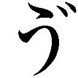

| 「超」怖い話 怪罪 「超」怖い話シリーズ (竹書房文庫) | |
| 久田樹生 | |
| (2011) | |
本作品は縦書きでレイアウトされています。
また、ご覧になる機種により、表示の差異が認められることがあります。
一部の漢字が簡略字で表示されていることがあります。
※本書に登場する人物名は、様々な事情を考慮してすべて仮名にしてあります。また、作中に登場する体験者の記憶と体験当時の世相を鑑み、極力当時の様相を再現するよう心がけています。現代においては若干耳慣れない言葉・表記が登場する場合がありますが、これらは差別・侮蔑を意図する考えに基づくものではありません。
イラスト 久保田晃司
シンパシー
梶尾碧さんは、他の体験者から紹介された人物である。
普通の若い女性的外見であるが、少々線が細い感じを受ける。
最初は警戒している様子が窺 えた。それは当たり前の反応だと思う。
他の人物を交え雑談などを繰り返す内、少しずつだが御自分のことを話して下さるようになった。初めて会ってから四回目くらいだったと記憶している。
「第一印象は怖い人、だったんですよ。だから」
彼女はそう言って微笑んだ。
これは、彼女が教えてくれた自身の体験である。
幼き頃
幼い頃、梶尾さんは虚弱体質だった。
すぐに熱を出しては幼稚園を休む。気管支や肌も弱く、また、体力そのものがなかった。他の友達と駆け回ることは少なく、一人遊びばかりが上手になっていた。
そんな彼女も小学校に入ってからは、次第に健康になっていった。成長と共に体質が変わってきたのかもしれない。
ただ、気管支と肌の弱さは変わらなかった。
小学三年のとき。秋から冬、季節の変わり目だった。
その日は朝から喉が痛かった。顔も火 照 り始めている。
「また喉が腫れているのね......。病院に行こう」
かかりつけの病院へ連れて行かれた。
受け付けの最中、母の後ろで待合室を眺める。
マスクをして項 垂 れている大人が数人。他は自分と同じくらいの子供が多い。クラスでも風邪を引いている子が多かったことを思い出す。
母親に促され、長椅子に座った。身体がだるい。何となく熱が上がりそうな予感がする。肌の上にもう一枚分厚い皮が張ったような感覚もある。
母親に寄りかかると、額や頬に手を当ててくれた。冷たい感触が心地よかった。
「なかなか呼ばれないね......。碧、もうちょっと我慢してね」
母の声が遠い。いつしか現実と夢の狭間にいた。
ワイドショーを流すテレビの画面が波打つように乱れる。薄く開けた目に、色の奔流が入り込んできた。前に座った人の後頭部に渦が巻く。
周囲の雑音が耳にぐわんぐわんと鳴り響いた。駆け回る子供達の足音や声が煩 い。
（──こども？）
さっき見たとき、待合室を駆け回るような子供は誰一人いなかった。全員が長椅子にぐったり座り込んでいたはずだ。身体を起こし、数回瞬きをした。
やはり子供なんかいない。
熱のせいなのだろう。再び母親に寄りかかり、瞼 を閉じた。
しかし、子供達の声が聞こえる。歓声のような、悲鳴のような。やはりいたのだ。確かめようとしたが、目が開かない。目 脂 で固められたように瞼が動かないのだ。指で擦り落とそうと試みたが、今度は手が動かない。それどころか、身体そのものが言うことを聞かなくなっていた。子供の声は続く。遠くで反響している。かと思えば近くで囁 き声になる。何を言っているのだろう。瞼を通して見えるのは、赤い世界だ。瞼を走る血液の色。外から強い光を当てられているみたいだ。子供の声が近付いてくる。耳を塞ぎたい。でも塞げない。意識しないようにしても耳が敏感になっている。意図しなくとも、声は無断で入り込んでくる。
耳のすぐ傍で、声が聞こえた。
〈......やったぁ、やったぁ、やったぁ、やったぁ。うれしいなぁ、うれしいなぁ......〉
男の子と女の声。数人の声が重なっている。
〈うれしいなぁ、うれしいなぁ。やったぁ、やったぁ、やったぁ、やったぁ......〉
しかし、そこに喜びの色はなかった。
無感情というわけでもない。ただ言葉と響きが乖 離 している。
誰かに言わされているのか、それとも別の感情が隠されているのか。
「──梶尾さーん、梶尾碧さーん」
看護師に呼ばれた。母親が〈起きて〉と囁く。
目を開けることができた。身体に自由も戻っている。
周りを見回す。待合室に子供は一人もいない。診察が済み、帰ったのだろうか。それとも夢を見ていたのだろうか。母親に手を引かれ、よろりと立ち上がる。
まだ耳の奥であの声が残っていた。
力の入らない足で診察室のほうへ歩き出したときだった。
......やったぁ、やったぁ、やったぁ、やったぁ。うれしいなぁ、うれしいなぁ......。
後ろからあの声がした。
振り返った。
白い壁があった。その中から声は聞こえていた。
「もう。病院なのに煩いわねぇ。どこで騒いでいるのかしら」
母がぽつりと非難の声を上げた。
熱が上がりきらないためか、苦しい一夜を過ごした。
予兆
小学生の頃から、体調が悪くなる気配に敏感になった。
ただの感覚であるが、「あ、来るな。熱が出るな」と分かるのである。そういうときはあまり間を置かず喉が腫れぼったくなってくる。そして熱が出た。
熱が出ると、厭なものを沢山見た。
天井に張り付く小さな男の子や、窓から覗き込む自分くらいの女の子。ゴミ箱の後ろ側から這い出そうとする黒い人。
最初の頃は怯えて泣いた。親に縋 り付いた。
「熱があるから、おかしなものを見るのね」
熱のための悪夢だと言う。しかし見える。ただ、それだけで何か実害があるわけではない。
その内、夢や幻だと自分を納得させる術 を覚えた。
四年生のとき、夏休みも近い七月頭だった。
風通しの良い縁側近くの和室に寝転んで、本を読んでいた。
ふと、あの予感がした。
（あ。熱出そう）
この後に友達の家へ行くという約束がある。しかし出先で体調を崩したくはない。電話を掛けて断ろうと起き上がったときだった。
自分が寝転んでいた畳の縁で、何かが動いた。
チョークに似たものが一本、縁から数センチ飛び出している。色は肌色。先端は滑らかに丸い。じっと見つめると、それが指だと分かった。先端に爪があった。ただし、色艶がとても悪かった。
また幻を見ているのか。
溜息を吐きながら立ち上がる。
指が増えた。縁の隙間からぽんと突然姿を現す。二本。三本、四本、五本......。身動きできずに立ち尽くす内に、畳の周り総てを指が埋めた。殆ど隙間がない。
指は僅かに蠢 いている。
跨いで良いものだろうか。縁を越えた瞬間、下から手か何かが飛び出してくるのではないか。身体を掴まれるのではないだろうか。
頭の中を様々な予想が飛び交う。
（......でも、幻だもんね。きっと。多分）
恐る恐る足を踏み出した。
右足が縁を越える。何もない。左足も越えた。何もない。
「なぁんだ」
ほっとして後ろを振り返った。
──両方の足の裏が熱くなった。
真夏の、焼けた砂のような熱さだった。
思わず声が出る。熱さは痛みに変わった。何十本もの注射を纏 めて打たれているような激痛。
しかも一瞬で終わらない痛み。息が止まりそうだ。
思わず尻餅をついた。
痛みは足の裏からどんどん上に登ってきていた。
これまで受けたことがない苦しみに声も出ない。脂汗を浮かべながら転げ回る。
「ぉ、かぁ、さァん──」
やっと、小さな声が出た。
途端に痛みが去った。
畳の上で手足を投げ出す。汗塗れだった。全身で呼吸した。力が抜ける。動けない。助けを呼ぼうと、廊下に向けて再び口を開いた。
「ねぇ！ お母......」
廊下に誰かが立っていた。
素足。膝の上で花柄のスカートの裾が揺れていた。家では見たことがない柄だった。感覚的にそれが若い女で、母ではないことが分かる。膝よりも低いところに手があった。腕が長いのか。色艶の悪い爪をしていた。さっき見た指にそっくりだった。
見上げようとしたとき、足が動いた。
廊下の奥へ消えていった。
「あらっ？ どうしたの？ ......また熱が出たんじゃない？」
入れ替わるように母がやってくる。見覚えのある足、紺色のスカートの裾。しゃがみ込んで額に手を当ててきた。
今し方見た物を訴えようとすると、それを遮 って母が言う。
「凄い熱。今から診てもらえるか、すぐに病院に電話するから」
その日の熱は三十九度を越えた。
熱と花柄と
熱が出る、体調が崩れる前は予感がする。
そんなとき、女が現れるようになった。
あのときのような痛みはない。花柄の膝丈スカート、素足で腕が長い女。上半身は見たことがない。見ようとしても逃げたり、物で隠れていたりする。
予兆を感じてからすぐ出てくることもあったし、ある程度時間が経った頃ということもあった。病気と女が現れる関係性──因果関係については予想も付かない。
ただそれが現実の人物ではないことは明白であった。
どちらにせよ、発熱などの体調不良が見せる幻でしかないのだろう。
目撃を重ねる内、いつしか慣れてしまった。
母親にも誰にもこのことは教えなかった。変な子だと思われたくなかったからだ。
五年生の三学期だった。
放課後、友達と教室の前方にある出入り口をくぐる。
「ねぇ、碧。今度さぁ、あそこの店に行こうよ」
そうだねと相槌を打ち、何となく後ろを振り返った。
右肩越しに見慣れた風景がある。窓の向こうにはビルの姿。ビルの隙間には青空が覗いている。しかし、今日に限ってその構図が何とも言えず気持ちが悪かった。
圧迫感。違う。焦って心臓が痛くなるような。違う。
どんな言葉でも言い表すことができない感覚が襲ってくる。確実に言えるのは、嫌、だけだ。
友達は既に廊下へ出ている。そして呼んでいる。
しかし、ビルに切り取られた空から目を離すことができない。身体が言うことを聞いてくれない。じっと窓を見つめてしまう。
「何？ 何？ 何見ているの？」
友達が戻ってきた。自分が見ている方向をじっと眺め、すぐに首を傾げた。
「何にもないじゃん。早く行こうよ」
彼女は再び廊下へ出ていく。
早く行かなくちゃ。そう思ったとき、何かが目に入った。
教室の後ろ、掃除用具入れの近く。丁度、出入り口がある場所だった。
引き戸に背中を寄りかからせて、誰かがこちらの様子を窺っている。
背は高い。子供ではない。上半身は酷くぼやけている。まるで靄 に包まれているようだ。それ以外の部位だけはっきり見える。
花柄のスカート。机に隠れて足元は見えないが、多分、膝丈。
（あの女だ）
こちらを見ていることだけが痛いほど伝わってくる。
しかし、体調が悪くなる予兆は来ていない。喉もすっきりしている。健康そのものだ。どこも悪いところを感じていない。
こんな普通の状態で、女を目撃したのは初めてのことだった。
「何してんのぉ」
廊下から友達が非難めいた声を上げた。
女がこちらに向けて動いた。とても鈍い動きだった。
数十秒掛けて、廊下側にある一番後ろの席に辿り着く。
どうするのだろう。このままだとぶつかってしまう。止まるのだろうか。それとも回り込むのだろうか。まさか、消えてしまうのだろうか。
「全く、先に行くよ！」
友達が大きな声を出した。
同時に女が机にめり込んだ。
思わず声が出た。
我に返る。慌てて教室から飛び出した。廊下の向こうに友達がいる。腕組みをして待っていた。笑いながら膨らませた顔が、急に真顔になった。
「何？ え、どうしたの？」
酷く強 張 った顔をしていたらしい。友達を〈いいから〉と急かして、腕を掴む。
急ぎ足で学校を出た。ここから離れないと、どうしてもいけない気がしたからだった。
学校から大分離れた頃に、一度だけ後ろを振り返った。
誰も、何も付いてきていなかった。
クラスの男子が入院したと、翌日の朝の会で先生が言った。
少年野球団の練習中、急な腹痛に襲われてその場で倒れたという話だった。腹膜炎を起こしてしまったらしい。あと少し間違っていれば、命が危なかったと聞いた。
その男子の席は教室の一番後ろ。掃除用具入れの前。
あの女がめり込んだ席の主だった。
初めて
教室に、あの花柄スカートの女が現れた。
何の予兆もない状態で出てきたことも初めてなら、教室で見たのも初めてだった。考えてみると女が現れるのは殆ど自宅だった。
（それに、男子が入院してしまった）
原因が女にあると言い切ることはできない。しかし、それしか考えられない。
例えようもない不安が襲ってくる。次に現れたら、どんなことがあるのだろうか。
出てこないでと願った。他にできることは、体調を崩したり発熱をしないよう、毎日の生活に気を付けるぐらいであった。
しかし、寒暖の差が激しいと健康を損なってしまう。喉に激痛が走り、高熱を出す。やはりその直前に予感がやってきた。更に、女の襲来があった。
しかし、あのときのような〈女が関係していそうな〉実害は一度もなかった。
六年生に上がってすぐの春だった。
土曜の午後、自宅で母親とクッキーを焼いていた。バターの香りを嗅いでいると、急に予感がやってくる。体調を崩す予兆だ。
（喉が腫れて、熱が出る......んだろうな）
急に冷え込んだせいだろう。少しだけ油断していた。既に喉の奥に違和感が現れていた。加えて、背中には悪寒が這い上がり始めている。
喉を触りながら、周りに視線を走らせた。
まだ女はやってきていない。何となくほっとする。
この頃、予感を感じたらすぐに周りを確認する癖が付いていた。
「何？ どうしたの？ ......あら？ 目がなんだかおかしいみたい」
母親の手が額に触れた。冷たさが心地よかった。手は頬や首筋を優しく撫でる。
「何だか熱が出ているみたいね......パジャマに着替えてベッドに行きなさい。後でクッキーを持っていくから」
言葉に従い、ベッドに潜り込んだ。一気に熱が上がったような感覚。耐え難い重みが全身にのし掛かってきた。力が抜ける。
気を失うように、眠ってしまった。
目が覚めた。周りは暗い。日が落ちたらしい。
夢も見なかった。熱のせいか身体はだるいが、さほど辛さはない。ぼやける目で時計を確認した。八時を過ぎている。部屋はヒーターで暖まっていた。
ドアが開き、母親が入ってきた。
「あら、起きたのね。何か食べられる？ クッキー？」
保冷具を取り替えながら、彼女が訊ねる。甘くて冷たい物が欲しいと頼んだ。
「冷えちゃうから、まずはお粥 ね。その後にオレンジジュースと......そうね、さっき作った苺のババロアを少しかな。持ってくるから待っているのよ」
優しい声に安心すると、再び瞼が落ちた。
「ふわぁっ」
突然、目が覚めた。右半身を何かに引っ張られている。マットレスから右手と右足が落ちた。重心が崩れ、滑るようにベッドから床にずり落ちる。
目を開けると、誰もいない。
力なく起き上がり、ベッドに戻る。時計は八時半くらいだった。母親が食事を持って入ってきた。お粥を何とか半分啜 る。オレンジジュースとババロアの甘さ、冷たさが何とも言えず美味しい。保冷具を入れ替えると、母親は食器を手に出ていった。
再び眠った。
「......うん？」
また右手と右足が引かれ、目が覚めた。ベッドからずり落ちていく。
暗い部屋、目を凝らすが何も見えない。だが、確かに手首と足首に何かが巻き付いているような感触がある。
右手を力いっぱい引いた。びくともしなかった。
そのまま引き摺り落とされ、冷たい床に転がってしまう。
身体が震える。部屋は冷え切っていた。ヒーターは切れていない。しかし、暖かくない。
身体を起こそうとしたとき、ドアが開いていることに気が付いた。
誰かが立っている。母親だという予想は外れた。
あの、花柄スカートの女だった。
やはり下半身しか見えない。そして、膝横に手がある。
その手が緩く揺れていた。腕を前後に振っているようだ。僅かな動きである。力を抜いた腕を、腰の動きで揺らしているような。
（......寒）
無視をして、ベッドに這い上がる。そのとき、背中に刺さるような視線を感じる。
善意。悪意。憐 憫 。憤怒。哀切。嘲 り。
何と例えたら良いか。様々な感情を含んでいることが伝わってくる。
振り返った。
ドアが閉まるところだった。部屋が急に暖かくなる。
布団を掛けようとしたとき、母親が入ってきた。
「......あ。ちゃんと寝てなさいって、言ったでしょ？」
何となく、今見た物を話してみた。が、予想通りの答えだった。
「熱で夢見たのね」
一月経たない内にまた体調不良がやってきた。
ただそれはいつものような、喉の腫れや悪寒を伴うものではなかった。
初潮を迎えたのだ。
それから体質が変わってしまったのだろうか。
頻繁に熱を出すことも、また体調不良を告げる予兆も、更にはあの女の訪れも綺麗さっぱりなくなった。
境目
中学生時代だったという。
進路を決める際、大きく悩むことになった。
何かをやりたい気持ちはある。しかし、それが何であるのかが分からない。どこの高校を選ぶか。その先をどうするか。自分のことであるのに、どうしても思い浮かばない。
（どうしてこの歳で自分の行く末を決めなくてはいけないのだろう）
漠然とした不安は明瞭な恐れになった。恐れは次第に考えることの拒否へ繋がっていく。
目の前にある問題を先送りにして、毎日を無為に過ごしていた。
そんな、進路問題の決着が付かない頃だった。
日曜日の午前中、父母は用事を済ませるため出かけていた。
リビングのソファに深く身体を沈め、テレビを眺める。番組はあまり面白くない。仕方なくティーンズ向けの雑誌を捲 り始めたところだった。
玄関のチャイムが鳴る。
客だろうか。それとも家族が帰ってきたのだろうか。雑誌を投げ、玄関に向かう。ドアの硝子 越しに見るが、誰もいない。少し待ってみたが、二度目のチャイムは鳴らなかった。
リビングに戻ると、またチャイムが鳴った。
再び玄関に出る。しかし硝子に人影はない。
ドアを開けた。やはり誰もいなかった。
念のためにと、外に出たときだった。
チャイムが鳴った。玄関脇を振り返る。誰の姿もない。ボタンを調べた。自分で押す。きちんと鳴った。暫く見ていたが、何の異常も認められなかった。
「壊れちゃったのかなぁ」
もう一度ボタンを押した。今度は鳴らない。繰り返し押してみた。反応がない。本当に壊れてしまったらしい。
親が帰ってきたら教えよう。そう決めて、中に入る。
サンダルを脱ぎ、ふと視線を上げた。
廊下の突き当たりの壁、その中央に見慣れない物が立て掛けられていた。
白い棒だ。
とても長く、天井に届いている。太さはラップの芯くらいか。父親が日曜大工のために買ってきたのかもしれない。今まで全く気が付かなかった。
近付いてみて、立て掛けられているのではないことが分かった。
棒は天井と床を繋ぐように填 め込まれている。壁との間に指一本くらいの隙間が開いていた。
表面は滑らかだ。材質は木ではない。また、金属でも紙でもなかった。例えるなら、艶のない樹脂だろうか。
「こんなの、いつ付けたんだろう」
棒に触れた。予想と違う感触があった。湿り気を帯び、ひんやりとしている。
右手で握り、軽く引っ張ってみた。びくともしない。
（一体、何に使うつもりなのかな......？）
首を傾げていると、チャイムが鳴った。
振り返る。やはり硝子の向こうには誰もいない。また鳴った。何度も何度も短い間隔でチャイムが繰り返される。
悪戯だろうか。それならまだいい。
もしかしたら変質者がいて、ボタンを押している。出てきたところを襲いかかって──。
ないとも言えない。最近、この辺りにおかしな人物が徘徊していると聞いたばかりだ。
「あっ......！ 」
冷や汗が吹き出した。ドアの鍵を閉めたかどうか思い出せない。
鳴り続けるチャイム。足を忍ばせて、玄関ドアに近付く。何とか鍵が見える場所まで辿り着いた。確認する。上下二つとも施錠していた。チェーンも掛けてある。
少しだけ安心したとき、チャイムが止んだ。
キキッ、カチカチン。
縦に並んだ鍵の摘 みが同時に回る。外から鍵が開けられた。
ゆったりとドアが開いていく。が、チェーンで止まった。
息が詰まる。じっとドアの隙間を見つめる。
隙間からは何も見えない。誰も、何も覗いていない。
何もできずに立ち尽くしていると、ドアがゆっくりと閉まった。さっきとは逆の動きで鍵が回転し、施錠された。
数分ほど様子を窺った。何もなかった。
少しだけ息を吐く。緊張が切れ、思わず視線を足元に落とした。
僅かに薄暗くなった。
顔を上げる。玄関ドア脇、明かり取りの窓に影が差していた。
目を凝らす。影が動いている。しかしそれが何であるかは判別が付かない。
また鍵が開いた。ドアが開いていく。
隙間から何かが覗いた。
白い棒だった。
目の高さくらいを、二本の棒が平行に並んでいる。
階段の手摺り程の太さで、艶がない。質感は廊下の突き当たりにあるものにとてもよく似ていた。陽光に照らされているせいか、濃い陰影が浮かんでいる。
再びドアが閉まった。
鍵が掛かる。殆ど同時に明かり取りの窓が明るくなった。
身を固くしたまま、じっとそちらを見つめる。
また影が差した。今度はそれが何か分かった。影絵に出てくる横顔にそっくりだった。
ただ、人間の顔の大きさではなかった。少なくとも三倍はあった。
横顔の影は、すっと右側に消えた。
足から力が抜ける。廊下にへたり込んだ。背中が汗で冷たい。
──変質者の仕業なのだろうか？ もし、家の中へ入り込んできたら......。
身体が震えた。涙が溢れてしまう。父母に早く帰ってきてほしかった。
（あ。携帯、電話、電話、携帯......）
親の携帯に電話を掛けることを思いつく。しかし、足が震えてしまって立てない。四つん這いのままリビングに這っていく。
ソファの脇、電話を掛けているとき、ちらと雑誌が視界に入った。
表紙がビリビリに引き裂かれていた。
その周りには、千切られ、丸められた頁が散乱している。
自分がやった覚えはない。では、誰の仕業なのか。
最悪の想像をしていると、電話が繋がった。
『もしもし？ どうした？』
父の声が聞こえる。起こったことをできるだけ簡潔に伝えた。
『すぐに帰る。ちゃんと戸締まりの確認をするんだ』
電話を終え、家の中を調べた。
誰も潜んでいる様子はない。どこも施錠されていた。
それから三十分ほどして、両親が帰ってきた。
「大丈夫か？ 安心しろ、家の周りには誰もいなかったぞ」
ほっと安 堵 したせいか、子供のように泣いた。
その夜は、母親のベッドに入れてもらった。
目を閉じると今日のことが思い出されて、再び泣いてしまいそうになる。
どうしても眠ることができない。
「ねぇ、お母さん──眠れない」
そう訴えた瞬間、チャイムが鳴った。
飛び起きた父親が玄関に飛んでいく。
「誰もいなかったよ......」
捕まえたら警察に突き出してやるのに──父親が怒りを露わにして戻ってきた。時計を見ると、夜中の十二時前だった。
それから数回チャイムが鳴った。
その度に父親が見に行ったが、犯人を捕まえることはできなかった。
翌日、玄関の鍵が変えられた。そして、父親が近くの交番へ相談に行った。
「パトロールを強化してくれるって」
それからというもの、チャイムの悪戯は鳴りを潜めた。
ひとつ気になるのは、あの廊下の突き当たりに立っていた棒のことだ。
チャイムの一件があった翌日、学校から帰ってきて気が付いた。
あの棒がなくなっていた。
「そんなもの知らない」
父親も母親も首を捻っている。嘘を吐いているように思えない。棒があった場所を調べたが、何の痕跡もなかった。
いつからあって、いつなくなったのか、未だに分からない。
親密
高校一年の頃、初めての彼氏ができた。
同級生で、名前を裕史という。サッカー部、センターバックのレギュラーだ。
クラスの皆で遊びに行ったことがきっかけだった。
服の趣味や話題の豊富さ、優しさに惹 かれた。自分から告白すると、彼はあっさり了承してくれた。本人も気になっていたとはにかんで笑った。
高校二年の冬だった。
初めてキスから先──最後まで行為を行った。彼も初めてだった。
痛みはあった。しかし、二人が繋がれた嬉しさのほうが勝っていたようにも思う。お互い恥ずかしかったのか、ずっと照れた笑いを浮かべていた。
その夜、入浴しながら自分の身体を何となく見てしまう。これまでと変わらない。でも、どこか違うような気がした。幸せな気分になってくる。一人でまた笑った。
ベッドに入っても興奮は冷めやらなかった。
何度も寝返りを打ち、漸 く眠りに落ちたのは朝方だった。
そのとき、夢を見た。
裕史と一緒に街を歩く夢だ。
普通のデートの情景と変わらない。ただ現実と違うのは、周りに誰の姿もないことだ。この世界には二人しか存在しない。そんな設定らしい。
のんびり歩き回る内、神社に行き着いた。見覚えはなく、どこというわけでもない。ただ神社だというだけだ。
お参りをし、境内を出る。
「ねぇ、ここから近くに」「るんだけど」「一緒にい」「面白そ」「嫌だったらい」「ひと」「無理」「でもそ」「んな言い」「うけど」
間にザリザリとしたノイズが挟まる。
所々の単語ははっきり聞き取れる。しかし、意味が繋がらない。
何度も聞き返していると、彼氏の顔が不機嫌になってきた。普段あまり見ない顔だ。怒っているのかと訊くと、それが余計だったようだ。
「俺、一人で行く」
それだけ言うと、さっさと歩いていってしまった。
周りが暗転する。鳥居の前で泣いた──ところで目が覚めた。
夢を見てから数日後。
正月に彼と初詣へ出かけた。
混雑した中、手を繋いで歩く。彼は常に人の波から守ってくれた。そういう人だった。
無事にお参りを終え、お神籤 を引き、縁結びのお守りを買った。
「ね、どこか暖かいところに行こうよ」
誘うと彼がにこりと笑った。
「ここから近くに凄くいい所があるんだけど、一緒に行こうよ」
どんな所が訊ねても、内緒だと悪戯っぽく笑う。
「面白そうなトコなんだ。ま、嫌だったらいいんだけど」
行ってみてもいいかな──そう答えようとした。しかし、口がそう動かなかった。
「行きたくない」
自分でも驚くほど冷たい言葉だった。
彼の顔色が変わった。
「嫌だったらいいよ。一人で行くから。無理言ってゴメンね。でもそんな言い方はないと思うけどね......」
それだけ言うと、彼はさっさと歩いていく。
鳥居の前で涙が溢れそうになった。走って後を追いかけ、コートの裾を掴む。一緒に行こうと謝った。
「ほんと？」
彼の顔が急に明るくなる。腕を掴まれると、神社の裏へ連れて行かれた。
初詣客で賑わう表参道と違って、静かだった。
「ねぇ、どこへ行くの？」
「いい所だよ」
神社から更に離れていく。彼に引っ張られたまま、地元の人でも知らないような細い道や抜け道、灌 木 の隙間を縫うように歩いた。
「ここだよ」
舗装されていない道の向こうに、煉瓦造りのトンネルがあった。
大人の身長でギリギリの高さだろうか。入り口はあまり大きくなかった。しかし真っ暗で奥がどこまで続いているか全く見えない。
正直なところ、怖かった。
「さあ、入ろう」
手を繋いだまま内部に入る。
二人横に並んで歩くのがやっとの幅だった。冷たく湿った風が奥から吹いてくる。耳や手が痛い。彼にしがみついた。奥に行けば行くほど光が届かなくなる。彼は携帯のライトを点けた。ないよりマシ程度の、心許ない光だった。
どれくらい歩いただろうか。
「あ」
彼が乾いた声を出した。
携帯のライトが切れる。彼が腕を振った。拍子に掴んでいた手が離れる。彼の靴音が先に進み始めた。後を追いかけようとしたのだが、真っ暗で動けない。闇に上下感覚が奪われる。へたり込みそうになるのをグッと堪えた。
「一人で行かないで！」
叫ぶ。しかし、足音は遠ざかる一方だ。暗闇の中、破裂したような笑い声が轟 いた。
彼の声に違いない。心底楽しそうな、無邪気な笑いだった。
バッグから携帯を取り出そうとするが、焦れば焦るほど探し当てることができない。
ただ「ふざけないで、待って、こっち来て、待って」としか連呼できなかった。
平衡感覚に限界が来た。思わずよろけてしまう。
肩が壁に付いた。砂っぽい。身体を安定させるために、背中を寄りかからせた。汚れても良かった。耳を澄ますと、遠くに足音と笑い声がある。
（兎 に角 、出口に行かなきゃ）
入ってきた方向へ足を進めたとき、ほんのりとした光を感じた。
左斜め後ろだ。振り返ると、顔の高さより少し上に光がある。ぼんやりとした緑色、蓄光素材の光そっくりだった。団扇 くらいの大きさと形だろうか。といっても、明瞭な形をしているわけではない。輪 郭 は霞んでいる。
これは何だろう？ じっと見つめる。
分かった。
顔だ。それも緊張した女の顔が陽炎 のように浮かんでいる。
（──あいつだ）
花柄のスカートの、あの女。顔を見たことは一度もない。が、多分そうだ。分かる。
ずっと出ていなかったのに。それにこんなとき、こんなところに。
出口の方向へ駆け出そうとしたとき、右肩が何かに引っかかった。
いや、引っ張られていた。
振り返る。肩を掴む手があった。闇の中、仄 かな緑色の光を放っている。
振りほどこうと暴れた拍子に転倒してしまった。
手を突く。地面は生暖かく湿っている。探ると、蜜 柑 ほどの突起が触れる。しかし柔らかい。
突起から何かが染み出してくる。臭いがある。例えるなら発酵した乳製品。立ち上がろうと藻 掻 くと、地面が微妙に揺れている。幽 かに波打っている。
〈あーはははははっ、あはははっ、あははははは──〉
彼の笑い声が遠くからこちらに向かってきた。凄い速度で近付いてくる。
どうしていいのか分からなくなり、大声で叫んだ。
そこから覚えていない。
気が付くと、明るい場所にいた。神社の参道裏に一人立ち尽くしていた。遠くの喧 噪 が聞こえる。彼の姿はない。
茫然としながらも、身体を調べた。全身が汚れている。広げた手と爪先に、白い滓 のようなものが大量に付いていた。強い悪臭を放っていた。発酵した乳製品が更に腐ったような、そんな臭いだった。手を洗ったが、全く取れなかった。
堪らなくなって、家へ逃げ帰った。
帰り着くなり、シャワーを浴びた。漸く落ち着きが戻ってくる。さっきの出来事も「暗闇だったから見た幻」だったのではないかと、自分を誤 魔 化 した。
服を着た頃に彼がやってきた。
「どうしたの？ 勝手に帰ってさぁ」
怒っていた。
「あそこ、ちょっとした怖いスポットでさぁ、驚かせてやろうと思って連れて行ったんだ。でも、泣いちゃうといけないからずっと手を繋いで......」
トンネルを往復するまでずっと一緒だったと彼は言う。最後、外に出たとき、梶尾さんが振り切って駆け出した。追いかけたが姿を見失ってしまった。携帯にメールや電話をするが、電源が切られていて繋がらなかった。
「だから家まで来たんだよ」
女のことは伏せておいて、逆に文句を言った。
「そんなことない！ 一人で行ったでしょ！ 一体誰と手を繋いでいたの？」
しかし彼は一歩も引かない。
「出るまで碧と一緒だった。僕は自分から手を振り放してなんかない」
喧嘩別れになった。
携帯を見ると、確かに着信履歴が残っている。
しかし、どうしても納得がいかなかった。
この一件から二人の関係がギクシャクし始めたことは否めない。
高校三年の夏、別れた。
名目上は受験のためだったが、お互いに心が離れたのだろう。
涙は出なかった。
拒否
大学を卒業し、機械部品メーカーの総務部に就職した。
折しも就職難の時期で、望んでいない職種であった。働けないよりいいと心を殺して働いた。
そのうち、やりたいことを見つけ、転職するつもりであった。
だが、転職せぬまま四年が過ぎた。
一人暮らしのアパート。偶 に彼氏が来る。年下でまだ大学生だ。一緒に住みたいと言うが、いつも断った。
──社会人である自分が律してやらなければいけない。
そんな風にいつも思っていた。
「......疲れたぁ」
仕事から帰り、食事や風呂を済ませた。いつも時間が遅くなる。
ふと本棚に目を遣ると、彼が置いていったホラー文庫がある。好きだと言っていた。所謂 怪談本で、本当にあったことを売りとするシリーズ物だ。これまで一度も手に取ったことはない。
嫌いだからだ。子供の頃からあんなことがあったのに、読めるわけがない。持って帰れと何度も言った。彼は言うことを聞かなかった。
しかし、今日に限って何となく興味を持った。本棚から何冊か抜く。あまりおどろおどろしくない表紙の物を選んだ。
（そういえば、あの女）
斜め読みの最中、何気なく頭に浮かぶ。
トンネルの一件以来、怪しいことは何も起こっていない。やはり気の迷いか、若さ故の幻覚だったのだろう。そういうことにしておいた。
嫌な気分になった。思い出すきっかけになった本を投げ出す。
（......そんなことより、もっと大事なことがある）
明日、自分は命を奪う。
彼と病院へ行き、小さな命を掻き出すのだ。
彼は学生である。まだ責任は取れない。また、責任を問うつもりもない。自分にだって原因はあった。総てにおいて甘かったのだ。
今、涙は出なかった。
決める前、決めた直後に出し尽くしてしまったのかもしれない。
処置が終わり、家に帰ってくる。
一緒にいると言った彼を追い返した。一人になりたかったのだ。
鍵を掛け、仰向けにベッドに寝転がる。
前触れもなく涙が溢れた。痛みと喪失感、後悔が堰 を切ったように浮かんできた。
湧き出す感情に苦しみ、ずっと泣き続けた。
（まだ泣けるんだ）と、思った。
ほんの少し落ち着いたのは、午前一時を過ぎた頃だった。
暗闇の中、ぼんやり壁を見ていると、病院で横になっているときのことを思い出した。
何か夢を見たような記憶がある。とても嫌な夢だったことは覚えているが、どんな内容だったか思い出せない。
大きく溜息を吐いたとき、チャイムが鳴った。
（こんな時間に。彼かな......）
来るなと言ったのに。出たくなかった。居留守を使う。また鳴った。外に人の気配があった。チャイムは幾度も鳴らされた。
──しつこい。
萎 えた足を引き摺って、玄関に向かった。ドアスコープを覗く。誰もいない。
しかし、チャイムは鳴っている。何度も、規則正しい間隔で。
（壊れたのかな？）
近所迷惑だ。止めなくては。方法を考える内に、何もかも面倒臭くなってくる。
思わず声が出た。
「止めてよ......！」
反応したかのように音は止んだ。
のろのろベッドに戻り、倒れ込む。天井を見上げた。
──大丈夫。大丈夫。だいじょうぶ。だいじょうぶ。
言い聞かせるように呟く。もう一度大きく息を吐いた。
寝返りを打つ。
暗い床に何かがあった。
黒い落花生に見えた。
片側が大きく、逆側がほんの少し小振りになっている。ただ、大きさは落花生ではなかった。
軽めの鉄アレイほどある。
（こんなの、あったっけ？）
覚えはない。
起き上がり、じっと闇を透かし見る。
落花生は少なくとも四つある。
電灯を点けようと起き上がりかけたとき、落花生が動いた。
あっという間に丸まっていく。まるで甲虫の幼虫のようになってしまった。
〈ボギャァー......ボギャァー......ボギャァー......ボギャァー......〉
丸くなった落花生達が、身を震わせて泣き出した。
「あかちゃん」
言葉が突いて出た。床の黒い塊から目が離せない。
突然、部屋の灯りが点いた。
咄 嗟 に顔を上げると、玄関のところに誰かが立っている。
膝丈、花柄のスカート──あの女だった。
今日は、上半身がはっきりと見えた。
白いチュニック風の服だった。
袖から長い腕が伸びている。なで肩で、頼りない体型だった。
ライトブラウン、というより色素の薄い髪。セミロングであまり特徴のない髪型をしている。
ただ、顔がない。
つるりとしており、白い。
蚕 の繭 ──という言葉が浮かぶ。
それでも女は床を向いていることだけは感じ取れた。
釣られて視線を移した。
丸くなった落花生達は、まだそこにあった。
よく見ると、曲 玉 のような形をしていた。しかし、表面が黒く膨れあがった腐肉にしか見えない。手足はなかった。頭らしきものがあるが、辛うじて分かる......程度だ。
それらはまだ泣いている。
視界の端で、スカートの裾が動いた。
女が上がり込んできていた。
そして、床に這い蹲 り、腕を広げた。
転がっている黒い曲玉を残らず掻き抱こうとしているのか。
しかし、女は子供を上手く抱けない。
長い腕を持て余している。目の前に転がる黒い曲玉をこちらに寄せようとするのだが、どうしても思うようにいかないようだ。
滑らかだった顔の中央が歪んだ。引き攣 ったような笑顔に感じられた。
それが聖母の微笑みを思わせたのは、何故なのだろう。
女が立ち上がった。
苛立ちが伝わってきた。
スカートを翻 し、足を大きく上げる。黒い曲玉を踏み付けた。
ぼちゅっと鈍い音と共に、足の下で破裂する。泣き声がひとつ減った。女は別の曲玉を踏みに行く。潰していく。
総てを潰し終えた。鳴き声は既に止んでいた。
女がこちらにやってくる。
自分を見るなと言わんばかりにぐにゃぐにゃの腕を前に突き出してきた。
指先が丁度鼻先に触れそうになったとき、ふつん、と電灯が落ちた。
目が慣れず何も見えない。花柄のスカートだけが闇に浮かんでいる。表面に散った赤い花が、目に痛いほどだった。
顔に何かが貼り付いた。思わず目を閉じる。
貼り付いた物は湿っていた。濡れた布のような感触だった。
腐った牛乳の臭いがした。
その上から、何かが顔を撫で回す。
慈 しみ──。
そんな言葉が漠然と脳裏に浮かんだ。
貼り付く布と撫で回す感触が消え失せる。
恐る恐る目を開けると、静かな暗い部屋だけがあった。
立ち上がり、壁のスイッチを入れる。蛍光灯で部屋が照らされた。
何もなかった。
愕 然 としていると、虚脱感が覆い被さってくる。続いて、胸が苦しくなった。
また涙が零れ落ち、朝まで泣いた。
それから一年が経つ。
彼とは別れた。今は一人で頑張っている。
フェルトで小さなマスコットを作った。綿を入れた天使。
あれから、あの女は現れていない。
偶に気配を感じることはある。
しかし、前のような気持ちにはならない。
どちらかと言うと、どこかにシンパシーを感じている。理由を言葉にすることは簡単だが、あまりに安っぽい内容になるので、したくない。
次、女と会うときは、多分もっと冷静に対応できるのではないかと思う。
ただ、会ってしまったらどうなるかは、よく分からない。
......遠くにありて思ふもの
坂巻明由美さんと話していたとき、ふと、幼い頃の記憶の話題になった。
「ちっちゃいときのことでも、鮮明な記憶が残ってますよねぇ」
確かにある。例えば手にした玩具の質感であったり、それを買ってもらった場所の情景であったり。総てが関連して記憶されている......と話しているときに、ちょっとした引っかかりを感じた。玩具をくれた相手は覚えている。しかし、買ってもらった場所はどこだったか。風景は細かく思い出せるのだが、それがどこだったのか分からない。
具体的な建物や周囲の状況が説明できるのに、該当する場所が思い浮かばないのだ。
そんな話をすると、彼女も大きく頷いた。
「そういうことって、ありますよね」
例えば......と彼女は話し始めた。
どうしても触りたかった
小学校に入学する直前だったと思う。
春の陽光の下、近くにある商店へお遣いに行った。歩いて五分、走ったら三分くらいの近さにある個人商店だった。
「あっちゃんはおつかい、偉いねぇ」
店の小母さんに大きな飴玉を貰った。手に小さな調味料の箱を持ち、ソーダ味の飴をしゃぶりながらのんびり帰る。
「あれ？ にゃんこだ」
目の前に仔猫がいた。通りに置かれた縁台の下で日向ぼっこをしている。白黒斑 の可愛い猫だった。撫でようとすると逃げていく。その内、ついっと家と家の間にある細い隙間に逃げ込んでいった。
なんとしても撫でなくてはいけないと思った。頭を突っ込んでみて分かったが、身体を横にすれば通り抜けられる。
隙間に入り奥を向くと、仔猫が座ってこちらを見つめていた。まるで待っているようだ。
「待ってよぉ」
小さく呟きながら摺り足で歩を進める。所々にあるでっぱりにスカートの裾が引っかかって、歩き辛かった。壁や下を確認しながら数歩進む。仔猫を見る。やはり待っている。
もう少しで隙間を抜けようとしたとき、仔猫が右に走り出した。
「あっ。もー！」
急いで隙間から飛び出した。
路地になっていた。初めて見る道だった。鳴き声のするほうへ視線を向けると、仔猫が座っている。近付くと逃げた。ある一定の距離を保っているようだったし、また、どこかへ連れて行こうとしているようにも感じられた。
猫が路地を抜けた。もちろん追いかける。
「あれ。え？」
路地の外は、知らない街だった。
大きな車が走っている大通りで、近くには煌 びやかなお店が沢山並んでいる。看板にはアルファベットが書いてあって全く読めなかった。見上げると、人が大勢歩いている。その誰もが、背が高く、金髪で碧い目をしていた。偶に黒い肌をした人もいた。ただ、誰しも自分を怪訝そうな目で見下ろしていた。
驚き、元の道に戻ろうと振り返った。路地は消えていた。
（どうしよう）
そわそわしていると、仔猫の鳴く声がすぐ近くで聞こえた。いつの間にか足元にいた。仔猫を抱っこしたかった。不安な気持ちが消えるような気がしたからだ。
しゃがみ込み、仔猫に手を伸ばす。
なーん。
一声鳴くと、仔猫が走り出した。途中で右に折れ、路地に入った。付いていく。狭い道だった。髪の毛や服に蜘 蛛 の巣やゴミが纏わり付く。
路地の出口を仔猫は左に折れた。自分もそれに倣 った。
「あっ」
自分の家の近くだった。
ただ、すぐ傍の歩道に車が斜めに停まっていた。前のほうが壁に突き刺さっている。壊れていてもう動かないみたいだった。お遣いに行く前にはこんな車はなかった。周りで沢山の大人が騒いでいる。
向こうからお母さんが走ってくるのが見えた。お遣いへ行ったお店のほうからだった。
「どこへ行っていたの!? こんなに汚れて......」
大きな声を上げながら抱きついてくる。意味が分からなくて、何となく後ろを振り向いた。
出てきたはずの路地がなかった。家の近くにこんな道はなかったことを思い出した。
「事故に巻き込まれなくて良かった」
お母さんは安堵の目で、こちらを覗き込んだ。
なーん。
仔猫の声が聞こえたが、姿は見えなかった。
鳴き声は、救急車のサイレンで消されてしまった。
お遣いに出かけて一時間ほど経っていた。
しゃぶっていた飴は、いつの間にかなくなっていた。
どうしてもそのお土産が欲しかった
中学生の時分である。
修学旅行先、自由行動中に道に迷った。友人達四人と小雨の降る中で途方に暮れた。
「どこでどう間違えたんだろ？」
住宅街、坂の途中で一人が呟く。お土産物屋が並んでいた場所からちょっと横に入っただけだ。店を覗きながら幾つか角を折れ、小さなアーチ状の石橋を渡り、坂を何度か上り下りした。そこまでは覚えている。その内、店がなくなったので戻ろうかと振り返った。
覚えのない道になっていた。
慌てて記憶を頼りに引き返したが、既に迷った後だった。
「誰か、この辺りを通る人に聞かないと」
しかし、誰も歩いていない。最終手段として、家の中の住人に聞く外ないようだった。どの家で聞くか、躊躇 いながら歩き回っていると、
「あ！ お店がある！」
他のもう一人が叫んだ。確かにお土産物屋がある。観光地ならではの店構えで、入り易そうな雰囲気があった。ただ他と違うのは、住宅街の真ん中にぽつんと一軒だけあることだった。
店に飛び込むと、優しそうな小 母 さんが立っていた。お土産物屋の紺色の制服に、深緑色のエプロンを掛けている。
「いらっしゃいませ。そんなに濡れて、どんげしたんね ？」
訳を話して道を教えてもらった。こちらの方言のせいで、理解するまで少し時間が掛かった。店から出て左に行くと、下り坂になる。そこを右に曲がり、坂を登るとあとは一直線であると小母さんは言う。
お礼を告げながら、ふと右手側の棚を見た。ある物に目を奪われた。
硝子製の小さな招き猫だった。消しゴム程度の大きさで、右手を挙げている。青や赤や白、黄色の色つき硝子で顔などが描かれていた。全体的に不細工だが、何となく愛嬌がある。心を惹きつけて止まない魅力に溢れていた。
「これ、幾らですか？」
値札がないので訊いてみた。小母さんは少し困ったように笑う。
「ごめんなさい、それ、売り物じゃないのよ」
知りあいに貰った手作りの品で、繁盛するように棚に置いていると言うことだった。代わりに、と薄い金属製の栞 を全員にくれた。
教えられた通りに進むと、土産物屋通りに戻ることができた。
既に雨は上がり、太陽が覗いている。他のクラスメートと合流し、バスに乗った。
（あの招き猫みたいなの、欲しいなぁ......）
翌日から行った先々で似た物がないかと探したが、どうしても見つからなかった。外見はそれなりに近い物があったが、どうしてもあの〈魅力〉を纏った品はひとつもなかったのである。
結局、どれも買わずに帰途に就いた。
修学旅行から帰り、三日後くらいだった。
学校から帰ってきて郵便受けを覗くと、小さな包みが入っている。油紙に包まれた小箱だった。開けてみると、綿に包まれたものが入っている。
「あっ！ これ」
あの招き猫だった。あのときの魅力もそのままに、こちらに向けて手を招いている。
もしかしたらあの小母さんが送ってくれたのだろうか？
いや、住所も何も教えていない。制服から学校は分かっても、どこの誰だとは知り得ないはずだ。ほんの少し不安になったが、招き猫を得られた喜びが勝った。
部屋の一番目立つ所へ飾った。お礼の手紙を書こうと思ったときに気が付いた。
（お店の住所が分かんない）
貰った栞とその包み紙を調べたが、店の名前も所在も分からなかった。一緒にいた友人達に訊ねても、誰一人店名を覚えている者はいなかった。
大学生になってから、中学の修学旅行で行ったあの土地を訪ねたことがある。
あの土産物屋通りはすぐに行き着くことができた。が、あの招き猫の店に辿り着くことができなかった。
その後、硝子の招き猫は粉々に砕けてしまった。
とある交通事故に巻き込まれかけた直後だった。九死に一生を得て家に帰り着いたとき、猫が砕けていることに気が付いた。原因は分からなかった。
欠片を総て集め、和紙に包む。それを神社の納札所へ納め、手を合わせた。
何となく、こうすべきだと思ったからだった。
どうしても就職したかった
就職難の御時世である。
大学卒業後、何とか職にありついた。
あまり望まない職種で、場所は大学とも実家とも違う土地である。できれば希望の職種、かつ地元で就職をしたかったが、贅沢は言っていられなかった。
働き出すとあっという間に時間が過ぎた。最初は違和感があったその土地での生活も、いつの間にか水が合ってきたようだった。
ある休日のことだ。
友人との約束が総てキャンセルになり、その日は朝から暇だった。
（そうだなぁ......）
新緑の季節である。買ったばかりの車で、一人ドライブへ出かけることを決めた。目的地は「海」とだけ決め、とりあえず走り始めた。
幾つかの街を通り抜け、山に差し掛かる。峠の運転は初めてだったが、信号機がないおかげか、非常に走り易かった。また周囲の景色も目に優しく映り、心を癒 す。
「ここを越えたら、海が見えるだろうな」
独り言を言いながら、峠を越えた。
しかし、海は見えなかった。逆に山深い道になっていく。道路は片側一車線であるが、どうも道幅が足りないというのだろうか。対向車が来ると思わず身を固くしてしまうほどになっていた。ここまで来てまた同じ道を引き返すのは避けたい。ガソリンもまだまだ入っている。そのまま進む覚悟を決め、アクセルを踏んだ。
ぐるぐると山道を登り切ったとき、目の前に展望が開けた。丁度お誂 え向きにパーキングスペースまで用意されている。
外へ出て、深々と空気を吸い込んだ。香り立つような爽やかな風が吹く。青々とした牧草地が眼下に広がり、赤い屋根の牧場らしき物があった。放牧された牛の姿も見え、遠くには畑を耕すトラクターが動いている。
「良い景色！」
一人ごちていると、脇から猫がのそりと顔を見せた。
白地に黒斑の成描だった。利発そうな顔で、こちらを見上げている。しゃがみ込み手を出すと、ぺろりと指先を舐めた。ザラリとした猫の舌の感触を指先に感じた。
猫が歩き出す。見送っていると、立ち止まった。後ろを振り返り、こちらをじっと見つめている。まるで付いてこいと言っているかのようだ。猫が進んだ方向には小道が続いており、奥に小さな看板がある。
（もしかすると、何か観光スポットなのかな）
誘われるように付いていった。看板は木地が剥き出しになっており、何を表示しているか分からなくなっている。
まあいいやと、先に進む猫の後を追いかけた。
「わっ」
木々に囲まれた池の畔 に出た。
湖面が太陽を照り返し、きらきらと輝いている。空を見上げると、抜けるような青空が覗いていた。岸辺に近付くと、水は碧く澄んでいる。だが魚の姿が見えない。池の外周を囲む小道はきちんと整備され、色とりどりの花が咲き乱れていた。対岸には四阿 が建っている。ベンチらしきものがあり、休むことができるようだった。
「凄いところだなぁ」
口を突いて出る。清浄な空気に満たされ、気分が良い場所だ。四阿まで行ってみることにした。のんびりと小道を歩き出す。また猫が目の前を歩いている。先ほどと同じように先導するかのようだ。
四阿に入ると、猫がすり寄ってきた──瞬間、周囲が真っ暗になった。
まるで真夜中に突然照明を落としたようだ。
急なことで目が付いていかない。バランスを崩しかける。突き出した手に何かが触れた。ひんやりとした硬い何か。四阿の柱のようだった。
立ち直ったとき、眼前に仄かな丸い光が浮いていた。
中央に猫が座っていた。あの白地に黒斑の猫だ。
〈いね〉
喋った。はっきりとした若い女の、洋画の吹き替えのような良い声だった。
何もできず立ち尽くしていると、また、いね、と猫は言う。
いね。去 ね、だろうか。
排水口へ吸い込まれる水のように、光が消えた。
周囲が明るくなり、周りが見えるようになる。
思わず声を上げてしまった。
池も四阿も何もかもなくなっている。アスファルトの上に立っていた。さっき車を停めた場所だ。手を突いているのは、自分の車だった。
茫然としつつ、池への道を振り返る。小道は消えていた。
そればかりか、眼下に広がっていたはずの緑の牧草地は、碧い海に変わっていた。
遠くには、白い船が走っていた。
その年、就職先が倒産した。バイトを続けていたが、三カ月を待たずに上手くいかなくなってしまった。仕方なくアパートを引き払い、地元に帰った。実家に戻って仕事を探すと、丁度経理の募集がある。何とかその商社へ就職することができた。
再就職後、数カ月過ぎた頃だった。
日本に台風が上陸した。
以前住んでいたアパートと元職場の周辺に、大きな被害がもたらされた。
多分、あのまま、あの場所で働いていたら巻き込まれていた可能性が高かっただろう。
九死に一生を得たのは、二度目だった。
今もあの仔猫と招き猫、光る猫のことを思い出す。
同時にそれらに絡んだあの風景も忘れることがない。
あれらが何だったのか、どういったことだったのか考えることはある。
しかし、回答が出ることはないだろう──と何となく思っている。
声
蓬 田 克臣さんは某機械部品メーカーに勤務している。
二十代も半ばを越え、仕事も少しずつ重要なセクションを任されるようになった。
中肉中背。精悍な顔をしており、はきはきと簡潔に話すタイプだ。
しかし、そんな彼も〈ある出来事〉に関する事柄に限って口籠 る。考えるように一言一言言葉にしているとでも言おうか。
「すみません。あの期間はちょっとおかしかったんですね、俺。我ながらおかしな行動しかしていないから、話にまとまりがなくて」
一瞬、間を置いて彼が続ける。
「それに、何と言うか、まだ......。できるだけ分かり易くと考えてはいるのですが」
その言葉に恐縮してしまう。
話せるときで構いません、そちらのタイミングで話を伺 いに参ります──と伝える。
彼は無言で頭を下げた。
聴
蓬田さんには学生時代から付き合っている彼女がいた。
ひとつ年下の女性だ。祐梨という。
少し背が低めであるが、痩せても太ってもいない。色白で割合整った顔をしている。物事をはっきり言う、竹を割ったような性格だった。どちらかと言うと中身は男性的なのかもしれない。大体、告白も祐梨からだった。
そんな彼女も今年社会に出た。
食品関係の企画営業部である。目標にしていた職種であった。
新入社員として毎日を忙しく過ごしているらしい。何事にも一生懸命な性格であるから、それもまた当たり前だろう。
そこがまた彼女らしいと常々思っていた。
「どうしたの？」
休日のファーストフード店。デート中、トイレから帰ってくると彼女が携帯とシステム手帳を見比べながら首を傾げている。手帳はちょっと前に買ってあげた物だ。
「うーん。ちょっとミスったかもしんない」
週明けに行われる会議。準備万端だと思っていたが、手帳を見直して小さなミスがあったことに気が付いたと言う。
「明日は早めに出社しないとなぁ」
彼女が小さく溜息を吐く。今日の内にやっておけないのか訊いたが、首を振った。社外秘のデータを扱うので、関係資料などは持ち出せないのだ。
仕方がないなとその日は早く帰ることにした。
彼女をアパートまで送り、電車に乗る。バッグから音楽プレーヤーを取り出すと、一枚のメモが一緒に付いてきた。システム手帳から外されたものらしい。覚えがないから、もしかすると彼女が入れた可能性がある。
メモには何か走り書きのような物があった。判読できない。彼女が書くような文字ではなかった。ゴミだろう。くしゃっと丸めてポケットに突っ込んだ。
プレーヤーのイヤホンを耳に突っ込む。再生ボタンを押した。
しかし、いつまで経っても音楽が始まらない。
画面上では普通に動いている。だが、音が出ていない。ボリュームを上げても駄目だ。ジャック部分を弄ってみるが、僅かなノイズも聞こえなかった。一度電源を落として再起動を掛けたが同じだった。
（本体なら修理に出さないといけないかなぁ......）
音楽を聴くのを諦め、耳のイヤホンに手を伸ばした。
〈......プッ。ブツッ。ふわぁぁああぁああぁ〉
ぶつ切れのノイズに続き、女の声が聞こえた。言葉ではなく、また何かの感情を伝える物でもない。ただ単に女の声だとしか言えなかった。
こんな音源、入れた覚えはない。手を下ろし、耳に集中する。
女の声は長々と続いている。偶に呼吸音が入るがそれも短い。多分息継ぎなのだろう。
画面を確認すると、男性ポップス歌手のアルバムジャケットが表示されている。曲名もいつも聞いているヒット曲のままだ。
曲飛ばしをした。しかし、女の声は止まない。もう一度、飛ばす。やはり声は止まない。途切れもしない。
周りを見た。しかし、空いた電車には男しか乗っていない。
イヤホンを片方外してみたが、それらしき音は聞こえなかった。イヤホンが入ったほうの耳には、女の声が続いている。
もう一度イヤホンを戻す。
じっくり聞くと、女の声に位相があることが分かった。右左に動いている。ステレオだ。また微妙に距離感が変化していた。耳元で鳴ったかと思えば、遠くに行く。左から右に移動して、また左に戻ってくる。そして左耳に近付く。
まるですぐ傍に女がいるようだ。
バイノーラル録音という言葉を思い出した。
（何だ、これ？）
電源を落とした。女の声は止まなかった。
耳からイヤホンを毟り取る。しかし、声は聞こえる。自分を中心にぐるぐると回っている。周りの乗客は無関心な顔をしていた。何も聞こえていないのだろうか。
漏れそうになる声を押さえ込む。代わりに、頭の中で叫んだ。
（黙れ！ 止まれ！ あっちへ行け！）
女の声が遠ざかり始めた。隣の車両へ向かっている。そのまま声は消えてしまった。
マンションに帰り着き、もう一度プレーヤーを確認した。
いつもと変わらない状態に戻っていた。
女性
プレーヤーの不調はあの日だけだった。
あれからはずっと普通に使用できている。何か技術的な問題が起こったのだ、何万分の一で起こり得る不具合だったのだと自分に言い聞かせた。それだけでは説明が付かないことであったが、それより他に考えられなかった。
金曜日だった。
幾つかの懸案があり会議が長引いた。その後、残業となった。
課長と同期、三人でパソコンに向かっている。時折会話を挟みながら仕事を進めた。
「ん？ おい」
課長が訝 しげな声を上げた。パソコンがおかしくなったという。同僚と二人で課長のモニターを覗き込んだ。社内で使っているアプリケーションが立ち上がっている。入力は途中まで行われていた。カーソルの点滅が止まっている。
「ああ、これはフリーズしていますね」
同僚がマウスを動かしながら溜息を吐く。何をしても反応がない。一度強制終了をする外ないようだった。保存は途中から行っていない。
「......今日は終電に間に合わないかもな」
課長がぼやいた。当然下の人間である自分達が先に帰ることはできない。自分達の仕事を済ませ、フォローに入るしかなかった。
一同黙りこくったまま、仕事を続ける。キータッチの音だけが響いた。
「ん？」
また課長が声を上げた。また固まったのだろうか。うんざりしながら席を立ち上がる。
「どうしました？」
見ると課長が後ろを振り返っている。
「いや......なんだ。誰かが外にいたような気がしてね」
後ろはブラインドが降りた窓だ。地上八階、外にベランダはない。もちろんここにいる者全員、席を立たずに集中して仕事をしていた。
気のせいだということで、仕事に戻った。
「何？」
今度は同僚が声を出した。後ろを振り返っている。誰もいない。どうしたのか訊ねる。
「誰かが俺を呼んで、肩を叩いたんだ。女の声だった」
もちろん誰もそんなことをしていない。それにここにいるのは男だけだ。
「このビル、出るんだったっけ？」
課長が戯 けた口調で笑う。仕事に就いて二年目。そんなことは聞いたことがない。噂好きの女子社員達の口の端にも上ったことがない話題だ。
どちらにせよ早く仕事を終わらせようと、再びパソコンに向かった。
それからは何事もなく進み、一段落が付いた。
終電が出たため、仕方なく自腹でタクシーを利用する。
少しでも安く上げるため、自宅から少し離れたところへ停めてもらった。大きめの通りから住宅街へ入る。夜気が身に染みた。上着の前をかき合わせ、ポケットに手を突っ込んだ。
丸められた紙らしき物が指に触れた。取り出してみると、やはりその通りである。広げると、走り書きがあった。思い出した。あの、プレーヤーがおかしかった日、ポケットに突っ込んだままだった。投げ棄てるわけにも行かず、持って帰った。
電灯を点け、棄てようとポケットからゴミを取り出す。
「ん？ ちょっと待てよ......」
あの日着ていた上着は、絶対に仕事に行くときは着ない。完全にプライベート用だ。対して、今日来ているコートは仕事用であり、他では使わない。
では、何故あの日のゴミがこのコートに入っているのだろうか。
勘違いだろうか。しかし、広げて見たが、同じ物に思える。
女の声を思い出し、背中が寒くなった。
（偶然入ってしまったか、自分で入れ替えておいたことを勘違いしたんだ）
そう断じると、メモを細かく千切って棄てた。
週明け、仕事が始まった。
今週は客先に各種資料の説明と商品内覧会の案内をしなくてはならなかった。重い資料と案内パンフレットを持ち移動する。
二社ほど回ると、既に昼近くなっていた。
食事を摂ろうとビル街を歩く。
風が強かった。春だというのに襟 足が寒く、首をすくめる。
そのとき、誰かの視線を感じた。
前を歩いているのは二人。サラリーマン風で、どちらも同じ方向へ進んでいる。
振り返ってみた。歩行者は誰一人見えない。まさかとビルを見上げるが、誰も覗き込んでなどいなかった。
歩き出すと、再び視線を感じる。
立ち止まるとその感覚は消えた。歩き出すとまた戻ってくる。
風か、それともビルの壁面に反射する光のせいだろうか。勘違いの可能性もある。気にするだけ無駄だと飲食店がある路地へ入った。
前からパンツスーツの女が歩いてくる。キャリアウーマン風で、多分三十代後半くらいだろう。後ろで束ねた髪と釣り上がった眉が特徴的だ。鋭い目でこちらを睨み付けている。
（まさか、さっきの視線はこの人か）
そんなわけがない。今こちらに向かって歩いてくるのだから。それ以前に、この女性が何故こちらを睨んでいるのか、それが気になる。
すぐ傍まで女はやってきた。
すれ違う。軽い香水の匂い。何でもなかったのだと振り返ると、女の姿がなかった。入り込む路地や扉はない。
また、あの悪意に満ちた視線を感じた。
道の前後に人はいない。
心臓の鼓動が早まった。恐る恐る振り仰ぐ。
雑居ビルの窓から誰かが首を出してこちらを見下ろしていた。目を凝らす。
さっきすれ違った女だった。
（何時の間に登ったんだ!? ）
女がいるのは少なくとも七階だ。ほんの数秒間である。駆け上っても、エレベーターを使ったとしても早すぎる。
見つめ合う形になった。頭の中で様々な仮説が駆け巡る。
女の口が開いた。
〈っけん......〉
耳に直接口を付けられたような位置で声が聞こえた。
音は違うが、電車の中で聞いたあの声だった。
すう、と女の首が引っ込んだ。
「嘘、だろう？」
女の首があった場所。そこには窓やそれに類する物は全くなかった。
灰色の壁面だけがそこにあった。
見間違い、勘違いということで処理した。
腫れ物
『ゴメンね、ちょっと忙しくって。休みも出勤なの』
木曜の夜、祐梨から電話があった。入社から九カ月が過ぎたとはいえ、新入社員である。重要な仕事というより、細々とした雑事を沢山やらなくてはいけないらしい。
「まあ仕方ないな。電話とかメールくらいは大丈夫なんだろう？」
それは大丈夫と、彼女は言った。
それから一カ月以上会えない日々が続いた。
やはり寂しかった。しかしそれを口に出すのは男らしくないと、我慢をした。
「何だよお前、彼女に会えなくて泣きそうじゃねぇの？」
一番仲の良い友人にからかわれるが、虚勢を張って首を振る。だが彼にはそれが嘘だとばれているようで少々バツが悪かった。
「あ。痛てっ」
土曜の朝、目が覚めると右の肩口が痛む。シャツの上から触ると、硬く腫れていた。鏡で見ると紫色になっている。
触れると痛みが走る。内出血をしているようでもあった。
どこかで打った覚えはない。酒を飲んで前後不覚にも陥っていない。
部屋にあった湿布を貼り付けて様子を見た。
夜になっても腫れと痛みは引かなかった。それどころか、余計に痛みが増していく。右腕を動かすだけで激痛が襲ってくる。氷で冷やすと幾分楽になったが、根本的な解決にはなっていない。
結局、痛みで一睡もできなかった。
腫れは更に進み、紫と緑色の斑のようになってきていた。
翌朝、ネットで日曜当番医を捜す。自宅からかなり遠いところだ。徹夜状態、その上右肩が異常なほど腫れている。外に出ることそのものが億 劫 になってしまった。
（今日まで我慢して、治らなかったら明日、近くの外科へ行こう）
そう決めて、一日ベッドの上で安静にすることに決めた。
点けっぱなしのテレビを見るともなく眺めていると、いつしか眠りに落ちてしまった。
自然に目が覚める。
見慣れた天井。明るさから言ってまだ午後も早い内だろう。起き上がろうとつい右腕を使ってしまった。
「......あ。え？ 痛くない」
腫れと痛みが消えていた。皮膚の表面に黄色みがかった跡が残っているだけだ。腕を回してみるが、引き攣れも何もない。
治っていた。
「何だったんだろうなぁ」
首を捻っていると、携帯が震える。一番仲の良い友人からだった。
『おい、ちょっと助けてくれよ』
怪我をしてしまったから、病院まで車の運転をしてくれと言うことだった。
家に行くと、ガレージの前で友人は待っていた。
右足、パンツを膝まで捲り上げ、そこに氷の袋を当てている。膝が変形するほど腫れ、どす黒い紫色になっている。
「おお、すまないな。キーはこれだから」
肩を貸して友人を車に乗せる。日曜当番医に向けて走り出した。
「なあ、どうしたんだよ、それ？ 転んだのか？」
友人は首を振った。
「分かんねぇんだよ。起きたら腫れていた」
前日夜更かしをしたせいで、目覚めたのは昼過ぎだった。起き上がろうとしたら酷く膝が痛み、腫れているのに気が付いたという。
「そういや、変な夢も見たなぁ。痛みからかもしれないけど」
夢に蓬田さんが出てきた。
灰色の世界。周囲には何もない。彼は上半身に何も着ていなかった。右肩が大きく丸く腫れている。
〈ハレをやる〉
そう言うと、自分の右肩の肉を左手で千切る。その肉塊を右膝に押し付けてきた。激痛と共に膝が膨れていく。七転八倒しながら蓬田さんを見上げた。
右肩に大きな穴が開いていた。真円に近い穴である。だが、何となく女性器を思わせた。内側が濁った薄桃色に湿っていた。奥は真っ暗だった。
その肩の後ろから、女が首だけ出してこちらを見下ろしていた。
厳しい顔をした女で、首が長い。
〈ふぅぼぉおおぉおぉぉぉぉ...... 〉
女の口から音が漏れ出してくる。
ガラスビンの口に唇を当て、息を吹きかけたような音だ。
肩の穴の奥で何かが盛り上がった。
得体の知れない物が膨れあがってきている。這いずり出ようとしている。
見てはいけない。それだけははっきりとしている。
目を強く閉じたとき──。
「逆に目が覚めたんだよ。そして膝が腫れててさぁ。痛いのなんのって」
痛みが見せた悪夢だったんだろうなと、友人は顔を歪めて笑った。
友人の腫れは翌日には引いた。
紐と欠片
彼女の仕事が一段落付いた。
久しぶりに会うと、仕事のことばかりを話す。
「今、仕事が面白くなってきたんだ。どうしたら一番良いかとか、考えることが楽しくて仕方がない」
自分とは真逆だ。やりたい仕事をやらせてもらえない。かといって、毎日忙しくルーチンワークをこなすだけ。仕事は面白くも楽しくもない。
自分の進むべき道を迷いなく歩く彼女と立ち止まってしまう自分。
何となく、一緒にいるのは良くないのではないかと考えてしまう。
後日、別れを切り出した。
彼女はすんなりと頷 いた。今は仕事のほうが大事なのだろうとそのときは思った。
一人になってから数日。
彼女が駄々を捏 ねずに別れてくれた理由について思い悩んだ。そんなに自分を好きではなかったのか？ 仕事の邪魔だと思っていたのか？ それとも──他に男がいたのか？
胃がひっくり返りそうになった。それが収まると、今度はどうしようもないほど怒りが湧いてきた。自分がこれほどまでに嫉妬深い性格だと言うことが分かった。
（見に行ってみよう）
その日から、暇さえあると彼女の職場や自宅に張り込み始めた。はっきり言ってストーカー行為に限りなく近いことは自覚している。しかし、止められなかった。
約一カ月間、物陰や少し離れたところから見守った。彼女に男の影はなかった。希に同僚男性と一緒にいることはあったが、それは他の女性社員も同席していた。
（こんなこと、止めよう）
安心とは違う。自分が何となく惨めになってしまったからだ。
現状に向かい合うべきだと、そこで初めて悟った。
自宅へ戻り、彼女との思い出の品を処分すると決めた。
ゴミ袋、ガムテープと紐を用意する。可燃物、不燃物はゴミ袋へ。個人情報が入っている物は後ほど処理することにして、他の場所へひとまとめにしておく。
「......あっ。これもあったなぁ」
写真データの入った記録媒体と、アルバムが出てきた。
データは破棄し、中身を完全に消せばいい。しかし、プリントした写真をどうするか迷った。鋏 を入れるのは何となく酷な気分だった。
「纏めて封印、かな......」
アルバムから写真を抜いていく。半分ほど終わった頃だろうか。
いつの間にか千切れた紙がカーペットの上に広がっていた。アルバムに挟まっていたのだろうか。クリーナーで吸い取ろうとしたとき、何かが気になった。一枚拾った。
思わず呻 いた。
走り書きの断片がある。以前破り捨てたあのメモ帳の破片だった。
きちんとゴミ箱に入れた。そして週明けに総て集積場に出したはずである。ここにあるわけがない。しかし、目の前にあるこれは確かにあの文字だ。
「あるはずがないだろ......」
自分に言い聞かせるように呟き、近くにあったレジ袋へ総て叩き込んだ。そのまま外へ出、辺りを探す。緑色の四トントラックが近くに止まっていた。その車体の隙間へ見えないように袋を差し込んでおく。
何も知らない運転手が帰ってきた。エンジンを掛け、走り出す。
安心して部屋に帰り、作業を続けようとゴミ袋を持った。が、既に続ける気が失せていた。
思い出の品は総て段ボール箱に入れ、押し入れの奥へしまう。目にすることがなければ大丈夫だと判断したからだった。
「汚れちまったな。......風呂にでも入るか」
浴槽を洗い出したとき、急に立ち眩みがした。目の前が真っ暗になり、前後不覚に陥る。
床に手を突き、立ち直った──はずだった。
──なんで？
何故か寝室の入り口に立っていた。
何重にも重ねられ輪になったビニールの縛り紐を、両手で握っている。
自分が何をしているのか分からなくなった。
上を見上げる。ドアの端に紐の端が引っかかっていた。思わず尻餅をついた。ドアノブにも沢山の紐が輪になってぶら下がっている。
首や手足にはガムテープが巻き付いていた。無造作にぐるぐる巻きにしたような感じだ。身体や床にも沢山貼り付いている。
部屋の至る所に〈何かをしよう〉とした痕跡が残されていた。
その夜、疲れ切った身体で寝転び、テレビを眺めていた。
〈......号線で、トラックが事故。運転手の......〉
現場の映像が流れた。半壊した緑色のトラックが映る。
袋を隠したあのトラックに似ているような気がしたが、違うような気もした。
メモの欠片については、忘れることにした。
彼女の部屋
冴えない毎日を過ごす最中、ふっと気が付いた。
（やるべきこと、一番重要視しなくてはならないことに没頭すべきだ）
仕事である。
一度考え方を改めてみると、仕事に対する意識そのものが変わってくる。
上司からの評価も上がってきたようだった。
そのせいだろうか。社運を賭けた一大プロジェクトの末席に参加させてもらえることが決まった。毎日が充実していた。
「あれ、久しぶり！」
休日出勤の帰り、後ろから声を掛けられた。
振り返ると祐梨が立っている。屈託のない笑顔で手を振っていた。蟠 りはないらしく、普通に会話ができた。
「今度ご飯でも食べよっか」
と、食事の約束をした。
それから二週間後、久しぶりの休日に祐梨と食事を楽しんでいた。
当たり障りのない会話の途中、彼女がぽつりと訊いてくる。
「何故、別れようって言ったの？」
口に運ぼうとしていた肉片を皿に戻した。
「......なんだろうな。ちょっと一人になりたかったんだと思う」
嘘を吐いた。本当のことを言うつもりはさらさらなかった。
沈黙の後、祐梨が囁いた。
「......元に、戻る？」
再び交際が始まった。
これまでと違うのは、より自然体での付き合いになったことだろう。お互いを尊重し、空気を読み合う。自立した男女同士らしい交際だったと言える。
元の鞘に収まってから、偶然同じ日に休みが取れた。
土日、丸々二日の休みは久しぶりである。出かけると疲れるだろうから、自分の家でゆっくりしよう──そんな彼女の提案に同意した。
久しぶりの彼女の部屋。一歩足を踏み込んだとき、まず匂いが気になった。悪臭などではない。他人の部屋の匂いだからということでもない。何となく違和感がある。らしくない香りというのが感覚的に近いだろうか。
ベッドの脇に座っても、その感覚は拭えなかった。
長く会っていない。部屋にも来ていない。模様替えだってしているだろう。しかし、そんなことでは説明が付かなかった。
「何か、変わったなぁ」
思わず口を突いて出た。彼女が笑う。
「長く来てないもんね」
そういうことではないのだ。しかしそれを口頭で説明するには言葉が浮かばない。仕方なく笑って誤魔化した。
彼女手製の和食を食べ、借りてきた映画を楽しむ。チーズ、クラッカーを摘みながら、ワインを飲んだ。映画は二本見た。だが、集中できなかった。部屋の雰囲気のせいか、何となく落ち着かなかったのだ。
グラスや皿を片付けているとき、酔った彼女が朗らかな笑い声を上げた。酒に弱いのは相変わらずだ。ベッドに寝かせ、洗い物を終える。電灯を消して隣に潜り込んだ。隣で寝息が聞こえた。
邪魔をしないように静かに天井を見上げる。この景色も久しぶりだった。
（......あれ？ こうだったっけか？）
闇に目が慣れた頃に気付いた。ここも少しだけ記憶と違う。何故だろうか。照明のカバーも天井も変わった様子はない。
「...... ー、うー、 ー......」
突然彼女が呻き始めた。魘 されているようだった。一度起こしてやろうと肩口を揺らす。起きない。強く押した。それでも目を覚まさず呻き続ける。声を掛けながら更に身体を揺らす。起きない。呻き声が酷くなってくる。
「あー、あー、うううう。 ー。ひゃめて......ひゃめて......」
ひゃめて。やめて。止めて、だろうか。起き上がり、名前を呼ぶ。
「祐梨、おい、祐梨。起きろ」
ぴたりと呻きが止まった。安らかな寝息に変わる。
ほっとして身を横たえた。
「起きて！」
目を瞑 った途端、祐梨が叫んだ。飛び起き、そちらを振り返る。彼女は目を閉じ眠っていた。明瞭な寝言のようだった。人騒がせだと溜息を吐いて瞼を閉じた。
「起きて！」
また声が聞こえた。横たわったまま、顔だけ向ける。彼女はやはり眠っている。もしかすると悪戯だろうか。しかし、起きている様子は微 塵 もない。
また「起きて！」が聞こえた。
ただ、今回は彼女の声ではなかった。そして場所も違った。
低く掠れた声は、真上から降ってきたように感じる。
目だけで周囲を見回す。暗い部屋の中には自分達以外誰もいない。まさかと思うが、上の部屋の声だろうか。しかし、これまでそんなことは一度もなかった。
全身に汗が浮くのが意識できた。
起き上がるべきか。ふと天井にある照明のカバーに目が行った。
無意識に喉から呼吸が漏れる。
カバーの中に、白く丸い物があった。
お面だと思った。
目鼻口がある。釣り上がった眉で、どことなく怒りの表情を感じさせた。
「起きて！」
お面ではなかった。
ハスキーな呼び声に連動するかのように、その口が動いた。黒目がぐるりとこちらを睨み付ける。細い眉が釣り上がった。眉間に皺 らしき陰影が浮かぶ。
飛び起き、照明のスイッチを入れた。
天井を見上げる。
「ない......」
カバーの中にはお面どころか虫の死骸も入っていなかった。
ベッドを見下ろすと、彼女が死んだように眠っている。熟睡しているのか、起きる様子が全く見えなかった。
荒い息を整え、電灯を消す。ベッドに入り、目を閉じた。
それからは静かだった。しかし眠りに入れない。いろいろ思い出してしまう。
暗い部屋。離れた天井。照明器具のカバーの中。
それなのに、あのお面ははっきり見えた。見え辛くなる要素ばかりなのに、はっきりと浮かび上がっていた。途中からは細かいディテールも手に取るように分かった。
──まさか。
カバーの外に貼り付いていたのか。
目を開け、天井を見上げた。
何もなかった。カバーの影だけがぼんやりと浮かんでいた。
夢、或いは自分は寝惚けていたのだと思い込むことにして、無理矢理目を閉じた。
「......はよ！ おはよ！ 起きなよ！」
漸く眠ることができたと思ったら、すぐに叩き起こされた。目を開けると彼女が笑っている。気分爽快といった表情だ。
「もう九時だよ。珈琲 、淹 れたから飲もうよ」
ささくれた気分でベッドから起き上がる。自分の目を疑った。
（何時の間に......）
小さな棚やカラーボックスが移動していた。更に壁に飾ってあった小さな絵がなくなり、写真をコラージュしたようなポスターパネルに入れ替わっている。テレビなど大きめの家具だけがそのままだ。
これだけのことをすぐ傍でしていたはずなのに、全く目が覚めなかった。
「あのさ、模様替え、した？」
彼女が頷いた。
「これだけ煩いのに目を覚まさないんだもん。驚いちゃった。疲れているの？」
悪戯っ子のように笑う。
何故このタイミングで模様替えをしたのか。言葉を選びながら、理由を訊いた。途端に彼女の顔が曇った。
「休みだったから、偶にはいいかなって」
それ以上何も聞くなという雰囲気がある。何かを隠しているようにも感じ取れた。
とりあえず黙り、珈琲を飲んだ。
部屋に感じていた違和感が薄れていた。理由は分からなかった。
子供部屋
出張に行く、と祐梨から連絡があった。
展示会の出展がてら、課のチーム数人で行くという。再来週の木曜日から土曜日の予定である。初めての出張だからか、声が弾んでいた。
彼女が帰ってくる土曜日。
午前中、自分の用事を幾つか済ませると時間がぽっかり空いた。時計を見ると昼にもなっていない。彼女を迎えに行くのは午後七時である。
携帯が鳴った。
『久しぶり。今日、これから少し時間ないか？』
年上の友人、興松さんからだ。家人の実家から美味しい海産物が届いたから、ウチで食事でもどうかという誘いの電話だった。丁度良いとそれに乗った。
「おう、来たな」
興松さんが玄関先で出迎えてくれた。後ろに彼の息子が隠れている。こちらをチラチラ覗いていた。人見知りとは少し態度が違う。どことなく怯えているようだ。挨拶をしても返してくれない上、全くこちらに近付いてこない。それどころか、逃げるように自分の部屋へ引き籠もってしまった。
「人見知りじゃないはずなんだが。もう小学校に上がるのになぁ」
気を悪くしないでくれと彼は言う。リビングに案内され、テーブルに座った。すっかり準備は整っており、あとは食べるだけとなっている。
「成希を呼びに行ってくるか。お前も来いよ。ついでに吃驚 させてやろう」
彼はやんちゃな表情を浮かべた。息子の部屋に闖 入 してやろうという算段らしい。
音を立てないようドアに隙間を開ける。そこから子供部屋を覗いた。
彼の息子がいる。が、若干様子がおかしい。
「ちゅっぱ、ちゅっぱ」
呟くような声で繰り返している。
跪 き、両手を頭上に高々と挙げたかと思うと、今度はそのまま上体を前に伏せた。それが済むと今度は勢いよく立ち上がる。また「ちゅっぱ、ちゅっぱ」と繰り返した。再び先ほどの動作を始める。その内、息が荒くなってきた。顔が上気し真っ赤になっている。汗まで浮かび始めていた。
「ちゅっぱ、ちゅっぱ、ちゅっぱ、ちゅっぱ」
呟きながら服を脱いでいく。あっという間に全裸になった。
子供の奇行である。興松さんと声を殺して笑った。
「......ちょっと、嫁を呼んでくる。あと、カメラを持ってくるわ」
彼がこの場を離れた。
再び部屋の中へ目を戻す。
（へぇ、そうかこの歳でもそうなるんだ）
子供の股間。唐辛子のような陰茎が膨らんでいた。屹 立 まで行かないが、ある程度持ち上がってきている。尿意があるせいか、それとも別の理由があるのか推察できない。
「ちゅっぱ、よもぎだ」
驚いた。突然自分の名前が呼ばれたからだ。
「よもぎだ かつおみ せーねんがっぴ......」
立ったり伏せたりを繰り返しながら、幼い声で続ける。生年月日、血液型、本籍地、現在勤めている会社名、部署などを淡々と羅 列 していく。
「ごとー ゆり せーねんがっぴ......」
今度は彼女の名前が出てきた。やはり同じく個人的情報が続いていく。親が教えたのだろうか。しかし本籍地などは特に話した覚えがない。
「......おい、まだやっているか？」
振り返ると二人揃っている。が、どう言えばいいのか。口籠ってしまう。何かを感じ取ったのか、彼らは中を覗いた。
「何だ!? 」
驚いた声を上げ、夫婦が部屋に飛び込む。
大きく開け放たれたドアから倒れた子供の姿が見える。両手両足を投げ出し、仰向けになっていた。全身が白く、血の気を感じられない。
「冷たくなってるぞ！ おい、早く！」
混乱の中、興松さんが子供を抱きかかえたまま謝ってきた。
「すまん、これから病院へ行く。お前は帰ってくれ」
気にしないで下さいと伝え、彼らを見送った。
「へぇ、そんなことがあったんだ」
帰ってきた祐梨と食事をしながら、今日の出来事を語って聞かせた。「多分、子供特有のものじゃないかなぁ。急に倒れるとか」彼女の見解である。さっきまで元気だった子供が急に体調を崩すということはよく聞く。
「でもさぁ、ちょっとその前がおかしいんだよな。俺らのことを話していたわけだし」
彼女も首を傾げる。
「だよね。誰かが聞かせたのかなぁ？ でも本籍地とかもでしょ？ ......あ。あたしの本籍地はなんて言っていた？」
教えると、彼女の顔から血の気が引いた。その通りだったようだ。
「ヘンだよねぇ......」
二人ともそれ以外の言葉が出てこなかった。
後日、興松さんから電話があった。
息子の体調が良くなったという報告だった。あの後、病院に二日入院して点滴を続けていたらしい。
『何かさぁ、起きてからいろいろ話すんだけど意味不明なんだよねぇ』
服を脱ぎ、立ったり伏せたりしていたことを覚えていない。
ただ「何かを見てしまった」ことだけは記憶にあるようだ。怯えながら、それでも一生懸命親に見た物を伝えようとするのだが、どうにも要領を得ないのだという。
『何かアニメか特撮に出てくるヤツの名前を言うんだよね。で、それが家に来たって』
悪役の名であるらしい。息子は怖い怖いと連呼した。
例の件が気になって、会社が終わった後、興松さん宅へケーキを持っていった。
「お。もう大丈夫か？」
息子に声を掛けた。
途端に彼はひきつけを起こしたようになり、全身を痙 攣 させ始める。また大騒ぎになりかけた。何とか収まったものの、長居し辛い雰囲気となってしまった。
帰る道すがら、携帯にメールが届いた。興松さんからだった。
〈ちょっとの間、来ないでくれないか。あの子がおかしくなる〉
この件を彼女に報告すると、少し考え込んだ。
そして、子供と友人を非難し始める。
そんなことを言うものではないと諭すが、どうしても聞き入れない。
「あなたに責任なんかないのに」
彼女の心遣いが少し嬉しかった。
カップ
十二月を過ぎ、プロジェクトが大詰めを迎えた。
仕事内容が濃くなり、残業もほぼ毎日のように続いた。休日出勤も多く、彼女と会う日が極端に少なくなる。
ここを乗り切ればと頑張った。彼女からのメールと電話が活力剤だった。
年度末、偶々残業がなかった日に彼女を誘った。
『ごめん、今日はこっちが残業なんだ』
どことなく素っ気ない答えが返ってきた。仕方なくコンビニ弁当を買い、自宅へ帰る。誰もおらず、寒い。冷え切った部屋で味気ない食事を終えた。どっと疲れがのし掛かってくる。張っていた気が少し緩んでしまったようだ。
早めに寝てしまおうと、風呂の準備をした。身体が温まるという薬用入浴剤を足す。
浴槽に身を沈めた。
「あ、れ？」
お湯の中が一部分だけ冷たい。対流か、それとも比重の問題か。手でかき混ぜると暖かくなる。しかし、少し経つとやはりそこが冷たくなった。
両手を使って範囲を調べる。大体の大きさを特定した。自分の胴体よりも少し細めだ。はっきりとは言えないが、冷たい部分は円筒状になっている。
（変なことがあるもんだな......）
風呂から上がり、バスタオルで身体を拭いた。何かが身体に付着する。
探ってみると長い毛がへばり付いていた。彼女の髪の毛ではない。それよりも大幅に長かった。どこか外で付いてきてしまったのだろうか。
あまり気にせず拭き続けると、また異物感を感じた。
ざらつく。ぱらぱらと床が音を立てた。砂粒かと思ったが、白く透明感がある。指に取ってみると、角張った結晶だ。塩のように見えた。バスタオルをはたくと、沢山落ちてくる。結構な量があった。カレースプーン一杯分はありそうだ。
（服を着たら掃除をしなきゃな......）
思わず溜息が出る。そのとき、立ち上る臭気に気が付いた。出所はバスタオルだった。
他人の臭いがした。
ボディーソープやシャンプー、トリートメントの匂いではなく、他人の家の台所や寝室など「据わりの悪い臭い」であった。
タオルは洗い立てだったはずだ。生乾きか何かだったかと洗濯機に放り込んだ。
明日履く靴を準備しておこうと思いつき、浴室を出て玄関に向かう。
（あれ？ 汚れてる？）
玄関の一部が濡れていた。泥も零 れている。足跡のように見えた。大きさから言うと女性の物だろうか。今日は誰も来ていない。それに外は晴れて星が出ている。雨などは一滴も降っていない。
インターホンが鳴った。
「......開けてよ」
女性のか細い声が聞こえる。出てみると、彼女が立っていた。
「来たよ」寂しげに笑う。身体が冷え切っていた。
「鍵を持っているのだから、勝手に入ってくればいいのに」
招き入れながら訊ねると、なくしたと言った。しかし彼女が手にしたキーホルダーにはこの部屋の鍵がぶら下がっている。
「嘘だ、キーホルダーに付いているじゃないか。ほら」
指摘すると、さも驚いたような表情を浮かべた。今、気付いたとでも言いたげだ。様子がおかしい。どこがどうとは言えないが、受ける印象が違う。顔形、姿は彼女そのものなのだが、どうにも彼女本人の雰囲気がない。疲れ切った顔だからだろうか。
「温かい物でも飲むか？ 珈琲、紅茶、ミルクとか」
紅茶にウイスキーを垂らした物が良いと彼女からリクエストがあった。どうせこの時間だ。泊まっていくだろうからとそれを出してみたものの、全く口を付けない。
他愛もない話をする内、深夜になった。
「帰るね」
祐梨が席を立つ。こんな時間にと、慌てて引き留めた。が、彼女は腕を振りほどいて部屋を出ていった。後を追いかけるがもう姿がない。携帯を掛けても出てくれなかった。外を探しながら、しつこく掛け直す。何度目だっただろうか。
『......何？』
彼女が出た。寝起きの声だった。今どこにいるか訊くと、自宅だと答える。
「嘘を言うなよ。本当はどこにいるんだ？」
自分の部屋だと繰り返す。話をしていても埒 が明かない。彼女は迷惑そうな声を上げる。
『明日も忙しいし、早いんだけど』
しつこく食い下がり、彼女の家電話に掛け直した。一コールが終わる前に出た。
『ほら、いるでしょ』
彼女の家は、歩いて帰ると一時間以上掛かる場所にあった。こんな僅かな時間で帰り着くのは、まず不可能だ。思い付きを口にする。
「自宅電話の携帯転送とかじゃないか？」
彼女が怒った声を出した。
『じゃあ今からウチに来てもいいよ！』
謝って電話を切った。
（何か、疲れたな......あ？）
部屋のドアを開けた。玄関の床が水浸しになっていた。所々に泥が浮かんでいる。仕方なく掃除をした。ある程度片付けたところで諦めた。
寝室のドアを開けたとき、またインターホンが鳴った。
玄関に戻り、ドアスコープを覗く。女の後ろ姿があった。肩 胛 骨の下まで垂らした長い髪だった。荒れていて、艶がなかった。
またインターホンが鳴る。女は後ろを向いたまま微動だにしていない。
ドアノブに手を掛けたとき、女が移動を始めた。背中をこちらに向けたまま、横に進む。
スコープから消えた。理由もなく全身から体温が奪われたようになる。
部屋に戻り、ウイスキーを胃に流し込んだ。
二杯目に口を付けたとき、気が付いた。
（このカップ）
さっき紅茶にウイスキーを垂らしたものが入っていたはずだ。そしてそれを彼女はひと口も飲まなかった──しかし、今使ったときに中身は入っていなかった。
酒の力を借りても眠れず、その夜は朝まで録画したバラエティーを見続けた。
その間、インターホンが鳴ることはなかった。
手帳
あの一件を祐梨に相談した。彼女にしか言えないことであった。
しかし「それは疲れからくる幻覚」だと判断されたようだ。
そう言われると弱い。確かにそうではないかと自分で自分を疑うこともままあった。とはいえ、物的証拠が残っている。
供した紅茶のカップ。玄関に残された濡れた泥の足跡。水。これらに関してはどうしようもないと、彼女に訴えた。
「自分で淹れただけでしょう？ で、自分で飲んだ。何の不思議もないし」
「足跡だって何かの勘違いか結露とか、理由は幾らでも考えられるし」
最後にこのような結論めいたことを付け足した。
「やはり疲れているんだよ。いざとなったらカウンセラーに話を聞いてもらうべき」
すっかり心を病んだ人の扱いだった。
年度末を過ぎ、プロジェクトが一区切りを迎えた。
継続すべきことはあるのでチームの解散はないものの、ある程度の縮小はされることになる。
ひとつのことをやり遂げた充足感があった。
打ち上げを終え、少しだけ時間に余裕を持てるようになった。
丁度その頃、彼女もひとつの仕事を無事締め括ることができたようだった。
休日、久しぶりに彼女とデートへ出かけた。
楽しい日にする予定だった。しかし、途中で険悪な雰囲気になってしまった。ちょっとした行き違い、些細なことが原因だった。
微妙な空気が流れ、途端につまらなくなってしまう。
この後は自分の部屋に来る予定だった。そこで晩飯でも一緒に作って食べようと約束していた。ただこうなってしまうと流石に悩む。
とはいうものの、喧嘩したまま別れるのも嫌だ──予定通り行動することに決めた。
家に戻り、玄関を開ける。
玄関に渇き掛けた泥の足跡があった。小さく、女性の物のようだった。朝出るときになかったことは確かだ。
「ほら、これ！ あのときと一緒だ！」
逆効果だった。彼女は、自分以外の女の存在があるのではないかと憤る。
否定しながら、部屋に上げた。これ以上この話題を続けるわけにもいかない。宥 めるように機嫌を取る。
食事の用意をし、酒を勧めた。
彼女は少しずつ上機嫌になっていくようだった。酒のおかげだろうか。ころころ笑っている。
逆に自分は全く酔えない。
何故だろう。気分的な物もある。しかし、背中が寒いのだ。首筋に鳥肌が立つ。
ふと、彼女の後ろにある写真立てに目が向いた。
漏れそうになる声を必死に押さえた。
写真の一部が破り取られていた。それは総て彼女が写っている部分だけだった。
他の写真立てやコルクボードに貼り付けられた物に目を走らせる。どれも同じく彼女の部分だけがなくなっていた。その失われた部分はどこにも見当たらない。
自分がやった覚えはない。出かける前までは正常だったことは確かだ。それに、部屋に戻ったときも、食事を作っているときも、全く気が付かなかった。
（もしかしたら、祐梨の仕業か？ いや、しかし）
違っていたとしても、また彼女がやったにしても話題に出すのは得策ではないように思える。悩んだ挙げ句、彼女には黙っておくことに決めた。
「これ、何......？」
何かの拍子に振り返ったとき、彼女が気付いた。ほの紅く染まった頬があっという間に白くなっていく。
ただ、怒りの気配はなかった。逆に怯えていた。
彼女は写真立てをテーブルに移す。
中身を取り出した。直に見てもやはり半分に破られている。
「これ」彼女が写真を手渡してくる。近くで確認して分かった。自分の身体を囲むように、細い傷が一本入っていた。針で引いたような線だ。
まさかとコルクボードも確かめる。それに貼られた写真も同じだった。
「ねぇ、あなたが破いたの？ こういうことしたの？」
強く首を振った。そんなことするはずがない。大体記憶にもないし理由もない。
不法侵入者の仕業かと仮定してみるが、合い鍵は彼女しか持っていない。入るにはこじ開ける外ないはずだ。しかし鍵は掛かっていたし、ピッキングされた形跡もなかった。
「やはり、他に女がいるんでしょ？ その人がやったんじゃないの？」
帰るという彼女を引き留め、言い訳をし続けた。納得してもらう頃には既に終電も出ている時間になっていた。
帰ることもできなくなり、仕方なく一緒に寝た。
彼女はこちらに背中を向けている。考えれば考えるほど目が冴えた。彼女も眠れなかったようだった。
休み明けから忙しい日常に戻った。
なかなか時間を作ることができず、彼女と会う機会もないままになってしまった。連絡も減り、ほんの少し疎遠になっていた。
ある日、彼女から久しぶりに電話があった。
『ねぇ、今日気付いたんだけど......あたしのシステム手帳に写真挟んだ？』
破かれた写真──彼女が映った部分が何枚も挟まれていたらしい。その写真にも傷が付いていた。ただし、顔の部分を執 拗 に削ったような傷だった。
もちろんこちらに覚えはない。
まず今日気付いたということ自体がおかしいのではないか。手帳は毎日見るはずだからだ。
そもそも彼女と最後に会ったのはひと月以上前。そのような悪戯をすることはできないことを知っているのは彼女自身だろう。
それを告げると、彼女は悲鳴に近い声を上げた。
『でも、なんで？ 何かよくわかんない！』
その日の夜、彼女と待ち合わせた。
「あのとき、ごめん」
会った後、突然謝られた。これまであったことが総て真実だったことを分かってもらえたようだ。自分の身に降りかかってやっと理解できたと、彼女は目を伏せた。
声
二人の付き合いが元に戻った、と思った矢先だった。
また彼女と連絡が取れなくなった。
携帯もメールも、自宅の電話もパソコンメールも全部返事が返ってこないのだ。
「これから忙しくなるかも。連絡滞るかもしれないけど、ごめん」
事前にそんな話をしていたとはいえ、あまりに反応がない。なさ過ぎる。
夜中、部屋に様子を見に訪れたが留守だった。流石におかしい。
翌日、意を決し、会社に連絡すると逆に聞かれた。
『あ、後藤さんの御友人ですか!? 彼女の行方を知りませんか？』
勤め先が彼女の実家に連絡したのは、無断欠勤から二日目だったようだ。家族も消息を把握していなかったという。
『丁度今日で三日目なんです。心当たりとかご存じないでしょうか？』
失踪、或いは何らかの事件に巻き込まれたのだろうかと騒ぎになる。結果、警察に届け出ることになったようだ。
しかし、直前に彼女の──祐梨の自殺が発覚した。
警察に行く前、両親がマンションまでやってきて鍵を開けてもらった。
その部屋の中に、変わり果てた姿があった。縊 死 であった。
家族に宛てた遺書が残されていたと聞いた。
ただ、部屋の様子に身辺整理の気配はなく、普段と変わらないままだったらしい。テーブルには飲みかけの珈琲カップが置かれ、ベッドの脇には雑誌が開いてあった。
死後、一日以上が経過していた。
それから数日後、夜九時過ぎに宅急便が配送されてきた。
日時指定がされていた。送り状には、懐かしい文字があった。
差出人は、祐梨だった。
（死ぬ前に、送ったんだな......）
胸が苦しくなり、喉が詰まる。
深呼吸をして、テーブルの前に座った。丁寧に封を開ける。中には、ＣＤ‐Ｒと彼女愛用の──自分が買ってあげたあのシステム手帳が入っていた。
手帳の表紙には「読んだら全部シュレッダーに掛けて燃やして下さい」と付箋が貼り付けてあった。これもまた彼女の手書きだった。
自分に宛てた遺書でも書かれているのだろうか。慎重に手帳を開いた。
極細ボールペンで丁寧に、また理路整然とスケジュールが書き込まれていた。これから先の分までしっかり予定が立てられている。とてもこれから死を迎えるような感じはない。何か読み取れないか、一枚一枚ゆっくり読み進めた。
「──うん？」
途中から書き込みの質が変わったように見えた。
一〇：〇〇 ～ミーティング →開発より
来声 再生
一三：二〇 ～アポ取り →ＯＫ 山住主任
取り囲む 白い赤
雑誌の切り抜き 見下げた 女
一六：〇〇 ～資料 →数字
上方から 絶えませ
しくらめん
ある部分を抜粋するとこんな感じだ。
文字に乱れはないが、内容が難解だ。
欄外にも意味不明の単語が躍っている。
また、貼り付けられた付箋も意味があるように思えない。
これは、後ろになればなるほど酷くなっていた。
「あれ？ ここから白紙？」
急に書き込みがない頁になる。日付を見ると、彼女が無断欠勤をした日からだった。
それでも最後の頁まで目を通した。
自分に対する言葉らしきものは、何ひとつなかった。
しかし、わざわざ彼女が送ってくれたのだ。ということは、何か伝えたいことが隠されているはずだ。絶対に。
もう一度頭から読み直す。隅々まで調べ上げる。
だがどうしても分からない。
「もしかしたら、こっちに何かヒントがあるのかな」
傷を付けないよう、丁寧にＣＤ‐Ｒをパソコンに入れた。
ＭＰ３ファイルが幾つか入っていた。全部で百メガほどだろうか。タイトルはどれも流行のアイドルグループやポップスバンドの曲名ばかりだ。彼女が好きだと言っていたものも幾つかあった。
それ以外、テキストファイルや画像ファイルのようなものはない。またファイルの情報も探ってみたが、何も特別なものはなかった。
（一体、俺に何を伝えたかったのだろう）
カーソルでファイルを選ぶ。右クリックから音楽プレーヤーのアプリケーションを開く。
無音。
スライダーで早送りをする。やはり何も鳴っていない。ボリュームを上げてみると、幽かにノイズのような音が聞こえる。耳を近付けた。何かが再生されている。
ヘッドホンを端子に繋げた。
〈サァーっ......っ つ......サァーっ......ごか......サァーっ......〉
ホワイトノイズの隙間に、何かが挟まっている。
息を止め、耳に集中した。
〈......ぁーっ......ぁ ーっ......〉
駅名と電車のような音か。クリアではないせいか、どうしても聞き取れない。他のファイルも総て開いてみたが、似たような感じだ。
もっと良い環境でと、愛用の携帯音楽プレーヤーに総てのファイルを取り込んだ。ヘッドホンを着けて再生し、音量を上げていく。
〈......はぁーっ......〉
ノイズの向こうから深い溜息が聞こえた。女性のものだ。多分──祐梨の。
〈はぁー......〉
また溜息。今度は随分はっきりと聞こえた。
右側のチャンネルだ。まるで耳元で吐かれているように感じる。
また溜息だ。今度は左から。
辛いのだろうか。
胸が苦しくなってくる。彼女の気持ちにリンクしてしまったかのようだ。
目を閉じ、より一層耳に集中する。
〈......ぁーっ......ぁ ーっ......〉
後ろのほうで独特のアナウンスが入った。やはり駅名だった。知っている。彼女のアパートに近い駅。よく利用していた。
プツッと一瞬音が切れる。
画面を見ると、次の曲名とアーティスト名が出ている。
〈......こぉおおおおおおおおぉぉぉぉぉ...... ザッ、ザッザ、ササッ......〉
マイクに当たる風の音だろうか。偶にかさついた音が入る。落ち葉が舞う音か、それとも髪の毛がマイクに当たる音か。風と雑音をバックに、また溜息が入っていた。
足音が遠ざかる。それに合わせて祐梨の声も小さくなっていく。何を言っているかはっきりしない。声はうっすらと左右に動いている。
また音が途切れた。次のタイトルが始まる。
〈......ぃーっ......ぃ ーっ......〉
また駅名が入っていた。今度はあまり聞き覚えのない駅だった。風の音とノイズが更に激しくなっている。
〈あー......どうしよう。なんて入れよう〉
はっきりと祐梨の声が聞こえた。少し右よりか。
──もしかすると、死に場所を探しているのだろうか。そして、音声で何かを言い残そうとしているのか。
音が切れた。また次のファイルに移る。
ノイズ。風の音。トラックか何かのエンジン音。溜息。鼻を啜る音。泣いているのだろうか。
時折だが音が左右に揺れる。マイクの位置が動いているのかもしれない。
次のファイルに進んだ。
数秒後、祐梨の声が入っていた。呟きのようだった。
〈......動画にしたほうがい〉
声が途切れた。風の音は続いている。遠くから女性の声が聞こえた。祐梨の声ではなかった。その声は途切れ途切れだが、どことなくヒステリックだった。
〈っんか......もん！ ......だけんが......っちょ......た！〉
どこかの方言のように聞こえる。
声は左右に揺れながら、こちらに向けて近付いてきていた。
ふつりと音が消えた。
次のファイルが始まる。
（集中しなくちゃ）
目を閉じ直した。
〈ば......やぁ......らす......せんもん......らん......い......ばい......ったい......〉
また、祐梨ではない女の声だ。これまでの音と違い、明瞭でしっかりステレオに分離している。すぐ目の前で喋っているかのような生々しさがあった。
思わず目を開けた。
手が届きそうな距離に、逆さ吊りの女がいた。
ひっつめ髪で、紺色のスーツ。キャリアウーマン風の女。両腕を真下に垂らしている。怒りを含んだ目で、こちらを見据えていた。
〈......くびっ......たい......らすっ......ど......じゃけ......ねまっ......〉
ヘッドホンから聞こえる声と、女の口の動きが合っている。
眼前にある物に、現実感がない。
何かをしなくてはと思う反面、「ああ、そうか、そうか」と意味もなく納得している自分がいた。多分、通常の判断力がなくなっていたのかもしれない。
〈たぐっ〉
突然、声が止んだ。女の口が真一文字に引き締められる。
女の顔がぐるりと百八十度回った。
祐梨の顔になっていた。
悲しそうな顔で、こちらをじっと見つめている。
青ざめた唇が開いた。
〈かぁくんのせいで、あたしは死ぬんだか〉
祐梨の声だった。
やはり、ヘッドホンの音声と口の動きが一致していた。
ぷつりと音声が途切れる。
するすると、祐梨が上がっていった。まるで玩具のようだ。
釣られて視線が上を向く。
天井に吸い込まれるように、彼女は消えた。
「祐梨」
涙が溢れてくる。
「祐梨、祐梨、祐梨、祐梨」
何度も何度もその名を呼んだが、彼女は戻ってこなかった。
システム手帳は、付箋に書かれた通り処分した。
「保管しておきたい」という気分は霧散していた。彼女の意思を尊重すること、そして手元に置くべきではないと判断したからだった。
外した外装は不燃物として処理した。残された中身は自家用シュレッダーに掛けた。が、何度やっても止まってしまう。果てはモーターの焼ける臭いがして、完全に壊れてしまった。仕方なく会社に持っていき、残業時間にシュレッダーを使わせてもらった。彼女の手帳だけをより分けるため、受け箱を一端空にしておいた。
最初は調子よく切り刻まれていたが、最後辺りになると異音が始まった。紙を飲み込む速度も次第に遅くなっていく。
全部終わったのは、開始してから二時間後のことだった。粉々になった手帳は大きな判型の封筒に入れ、自宅へ持って帰ることにした。
「......あれ？」
帰宅中、突然封筒が重くなった。持っていられないほどの重量感が腕に伝わってくる。よろけてしまい、思わず取り落としそうになった。
「──危ないだろうっ！」
目の前を無灯火の自転車が掠めていった。レーサータイプだ。ヘルメットにジャージー姿の男が後ろを振り返りながら、何度も毒突いた。
いつの間にか車道に近付いてしまっていたようだ。封筒を持ち直す。
「きゃははははっ！」
近くにある歩道橋の上から、女の嗤い声が聞こえた。見上げるが姿がない。
封筒は元の重さに戻っていた。
自宅に帰り着くなり、封筒をガムテープで何重にも巻いた。指定ゴミ袋に入れ、共同のゴミ集積場へきちんと棄てた。
翌日、念のために集積場を覗いてみた。何故か自分が出した袋だけがなくなっていた。
会社ではシュレッダーが壊れていた。
祐梨の手帳を破砕したものだった。
落ち着いた後、再びあの音楽ファイルを聞こうとしたことがある。
しかし、その殆どが再生できなくなっていた。
転送し直そうにも、パソコン内のデータも壊れている。ＣＤ‐Ｒをドライブに入れたが、ディスクの読み取りができなくなっていた。
諦めきれずに何度かディスクを読み込んでいる内、ついにはドライブそのものが故障してしまった。ドライブのベルトが切れたようだった。
残ったのは、携帯音楽プレーヤーに入れたものだけだ。
タイトルは文字化けをしており、きちんと表示されなくなっている。
再生すると、ノイズと幽かな女性の息遣い──それが祐梨のものかどうかも分からないものだが──が聞こえるだけだった。
つい先日、そのプレーヤー自身も壊れた。
メーカーに送ると、新品が送り返されてきた。
〈修理不可能のため、新品と交換いたします。
保証期間中のため、無償とさせて頂きました。
なお、データの復旧はできませんでした。大変申し訳御座いませんでした〉
青天の霹 靂
目撃してしまった ──というのは、体験者の方々から多く聞く言葉だ。
予期せぬところで、予想もしない物を見てしまう。
はっきりとその場でおかしいと分かることもあれば、後からもしかしたらと気付くこともあるという。
どちらにせよ、何かを見てしまったことに変わりはない。
「まさに青天の霹靂としか言いようがない」
とある体験者の言葉である。
ここでは目撃してしまった人たちの話を纏めてみた。
青天の霹靂的体験談をどうぞ。
ワンダーフォーゲル部
三沢さんが会社の有志と作った部活（会社非公認）がある。
それがワンダーフォーゲル部〈チーム隼 〉だ。
しかし殆ど名前の意味を成していない。単にみんなで河原や海や山に行って、バーベキューをする程度だ。せいぜい、偶に現地を散策するくらいだった。
初夏のある日、隼所属の男女混合で海へ出かけた。
楽しく遊んでいたとき、女性の一人が大きな声を上げる。
「熊がいる！」
全員が振り向く。突堤の向こう、海に大きく張り出した岬がある。その崖部分に茶色い巨体が貼り付いていた。
遠目には確かに熊っぽい。しかし、どちらかと言うと着ぐるみのような印象が強かった。要するに体型や動きが人間臭いのだ。
「......着ぐるみが崖から落ちそうになっているとか？」
その言葉に反論したのは、第一発見者の女性だ。
「絶対熊だって！ 最初、歩いて出てきた動きが違ったもん。あれは偽物じゃない」
その熊が途中で足を踏み外して、崖を滑り落ちたのだと主張する。
もう一度目を凝らすが、どうしても作り物にしか見えない。
「この半島に熊が生息しているとは、聞いたことないがなぁ」
全員が頷いた。熊派の女性だけが首を縦に振らない。
議論をしている最中、もう一人の女性が大声を上げた。
「あっ、落ちた！」
着ぐるみが海側に舞い上がっていた。
風にもみくちゃにされながら、岬の影へ消えていく。どう見ても中には誰も入っていない。
どちらにせよ、本物の熊ではなさそうだった。
「待って！」
誰かが金切り声を上げた。熊派ではない女性だった。
笑いが止んだ。
「中に入っていた人は、どこへ行ったの!? 」
岬には誰の姿もない。隠れたのだろうか。いや、姿を隠す場所はなさそうだ。それ以前に、何時脱いだのだろうか。見た覚えがない。
騒然とした砂浜で、誰かが驚くべき言葉を放った。
「待てよ。あれ、デカくなかったか？」
岬の大きさや近くにある建造物から逆算する。確かに大きかった。
多分、人や熊のサイズではない。
何故、眺めているときに気が付かなかったのか。全員が顔を見合わせる。
「......急いで、片付けよう」
誰ともなく、帰り支度を始めたのは仕方がないことだった。
後日、岬で見た物について参加者全員で話す機会があった。
熊っぽい。着ぐるみっぽい。茶色。大きい。
全員、これ以外の情報は殆どなかった。
細かい部分に関して、誰も見ていなかった。
興味だけで
大学生の頃、八木は〈屍体〉に酷く興味を惹かれていた。
ネットでグロ屍体画像を見ては喜んでいた。
「俺さァ、なんつーか、屍体が好きなんだよね。屍体写真とかグッと来て、堪らんね」
サークルの友人達の殆どは引いている。おかしな人間を見る態度さえ取られた。しかしそれを畏敬の念から発されるものだと勘違いした。
要するに「俺は特別な存在なのだ」と思い込んだのだ。
「なあ、キミ、八木君だろ？」
学食で見慣れない男が声を掛けてきた。痩身の眼鏡。色白で社会科教諭にいそうなタイプの外見をしている。
「屍体、好きなんだって？」
ため口の男は大井川と名乗った。違う学部に在籍しているようだ。二浪した後に入学したせいで、歳は上だ。だからなのかどこか居丈高な雰囲気があった。
それからは何かと大井川と話すことが増えた。
彼は〈手製の屍体写真集〉を持ってきては見せてくれる。ネットなどで拾った物を利用し、自作しているのだと言った。
「おい、これは凄いぞ。特別に見せてやる」
大井川が取り出したのはミニアルバムだった。中にはびっしりと写真が詰まっている。自前のプリンターで印刷したものだと彼は笑っていた。
最初は生きている仔猫、三匹だった。
次の頁では死んでいた。首をへし折られたようだった。木箱の中に、きちんと川の字に並べられている。
次の頁もそのままの姿勢で猫達は横たわっていた。
「......う」
思わず呻いた。
猫の目に蛆 が湧いていた。そして、腹の辺りが変化してきている。
ネットや写真集なら、対岸の火事として見ていられる。しかしこの写真には拒絶反応が出てしまった。身近すぎるのだ。
「どうだ。自家製屍体観察写真だ。今は猫だがな」
大井川が自慢げに腕を組んだ。
「本当はもっと大きいのが良かったんだけどさぁ。親猫とか犬とかな。でも動物は意外と強いからな。だから仔猫にしてやった」
──特に犬は怖いから、あいつら、血が出るくらい噛むから──大井川は付け加えた。
彼との付き合いを止めた。
本人にしっかりと拒絶の言葉を投げ付け、絶交したのである。
それから二カ月も経たない頃だった。
大井川が大怪我をしたと聞いた。
何もないところで転び、顔面から地面に激突したのである。
顔の右半分が下ろし金で摺り下ろしたように抉 れ、左耳が千切れたらしい。眼球にもダメージが残り、摘出手術が行われたとも聞いた。
更に頸 椎 捻 挫 、肋骨の罅 などが検査で発覚したようだ。
転んだだけでそんな風になるとは聞いたことがない。
どれだけ虚弱体質なのだと皆、嘲笑った。
大井川が大学に来なくなったのはそれから間もなくだった。
アパートで死んでいるのが見つかったのは、それから更に時間が経ってからだ。
夏だったから、腐敗が酷かったという。
ドアノブを使った縊死だった。噂だと首輪とリードを利用したらしい。
大井川を知る人物から、こんな話を聞いた。
「アイツの部屋からずーっと、猫の叫び声や犬の吠える声が聞こえていたらしいんだよなぁ。時期的にヤツがぶら下がっていた頃だってさ。でも、犬猫を飼っていた痕跡は全くないんだってよ」
まあ、怪我の後遺症を苦にしたのかもな──肩をすくめて彼は苦笑いを浮かべた。
ざまむぃろ
その日、野方さんは荒れていた。
会社で受けた叱責。家庭の不和。ストレスは溜まる一方だった。解消のため、帰りに飲みに行ったら行ったで、今度はぼったくられる。
酔いもしないまま、家に向かって歩いた。タクシー代さえ残っていなかった。
「......たすけてー......」
女の悲鳴だ。周りに視線を巡らせる。少し離れた小汚いアパートの前で、幾つかの人影が揉み合っているのが見えた。男が数人、女が一人だろうか。
助けるべきか。いや、状況が分からない。どちらにせよ危ない目に遭うのは明白だ。もし質の悪い連中であれば、もっと酷いことになるだろう。
思わず物陰に身を隠した。彼らに見つかっていないことを祈った。
「タスケテ！ タスケテ！」
よく聞くと女には外国訛 りがある。外灯に照らされた顔を辛うじて確認できた。東南アジア出身のようだ。身を捩り、必死に助けを求めている。
男の一人が地面に引き倒された。数人から殴る蹴るの暴行を受けている。加害者側はどう見ても本職だ。
黒塗りの車が来た。暴行されていた男が後部座席に押し込まれる。男達が乗り込んだ。女を残し、車が走り去っていく。
（何か途轍もなくマズイ物を見てしまった）
警察に駆け込むべきか。いや、今度は自分がああいう目に遭ってしまう恐れがある。情報提供者を警察は守ってくれるのか。
分からない。判断が付かない。
「タスケテ！ タスケテ！ タスケテ！ タスケテ！」
女はまだ叫び続けている。
混乱の中、少しだけ引っかかりを感じた。
（こういう場合、一人だけ残していくのだろうか......？）
ぴたりと女の声と動きが止んだ。
顔を上げると、女の目がこちらを向いていた。
すう、とこちらに進んでくる。しかし、足は動いていなかった。
女が目の前に立つ。彼女は大きく口を開けて、一文字ずつ区切るように声を出した。
「ザ マ ムィ ロ」
笑っていた。淫 蕩 な表情だった。
口が更に大きく開いた。中から赤黒く濡れた舌が垂れ下がってくる。何もできずに見守っていると、自分の目の前まで伸びてきた。
舌先が鎌 首 を擡 げた。本当に蛇の動きに似ていた。
自分の顔に舌が触れた。右の小鼻から右目に掛けてするりと舐め上げられる。
魚醤の臭いがした。
返す言葉もないまま立ち尽くしていると、唐突に女が消えた。
ブラウン管のテレビが消えるときにそっくりだった。
翌日、顔の右側が腫れ上がって熱を持った。
病院に行くと、何か菌が入ったせいだという。注射と抗生物質を処方してもらった。
家に帰り、ニュースやテレビを細かくチェックする。
あの夜に関する内容はひとつもなかった。
このことについては、そっと自分の心にしまっておくことに決めた。
やだなぁ
真下君の友人が肝試しに出かけた。
参加者は男女数人だった。場所は某有名スポットである。
「いやあ、面白かったよ」
友人から報告を受けた。参加した女の子となんだか美味しい思いをしたらしい。
「お前なぁ、そんな不純な動機でスポットに行っちゃあ、いけないよ」
自分のことは棚に上げて説教した。
失恋してから久しいこともあり、本当は少し羨ましかったのだ。
友人がにやけた顔で口を挟んだ。
「分かった分かった。今度はお前も連れて行くから」
二週間後の夜、漸く肝試しに誘われた。
行ってみれば、自分と友人以外に女性が三人もいた。が、残念なことに全員好みではない。ボーイッシュや姉御タイプ。また、暗い性格っぽい人だった。
（まあいいか。相手は一応女の子だし）
失礼なことを考えながら、全員でスポットを歩いた。当然何もなかった。
そこから帰る道すがらのこと。
友人の運転する車の助手席で、真下君は悶えていた。
（しっこ、したい......！）
残念ながら最寄りのコンビニまで三十分はかかる計算だ。耐えきる自信がない。仕方なく山道の途中で停めてもらった。
「何か、やだなぁ」
ドアを開けたとき、暗い顔の女性がぽつりと呟いた。
降りてみて分かった。ガードレールの隙間から林の奥に続く道がある。とりあえず女性もいることだからとその道に入り、木の陰で用を足した。貯めに貯めたせいか、いつまでも止まらない。長く掛かって漸く出し終えた。
「お待たせ」
車に戻ると、何故か全員が黙りこくっている。この小用で場を白けさせたのだろうか。一生懸命盛り上げようとしたが、無駄に終わった。
それどころか、周りは何か文句さえ言い出している。友人に至っては、「お前、それなんだよ」「気が付いてないのかよ」と訳の分からないことを繰り返していた。
「着いたぞ」
家からまだ距離があるところで、車から降ろされた。もっと先まで乗せていけと頼んだが、友人から冷たい声で怒られた。
「早く帰れよ！」
結局、渋々歩いて家路に就いたのである。
翌日、やはり文句を言っておこうと友人に連絡を取った。
「昨日さぁ、あれ、何だったんだよ？ 変な女ばっかり連れて来やがって」
『あ？ お前がションベンに出たときだよ』
──真下君が消えていった闇の奥から、声が聞こえ始めた。
高く、独特の抑揚がある。どう間違っても男の声ではない。そしてそれは謡 いのような伝統芸能系の響きを持っていた。
「ねぇ、何、この声」
「わかんない。気持ち悪い......早く帰ってこないかな」
全員が黙りこくってガードレールの奥を見つめた。
白いガス状のものがゆらゆら彷徨 い出ている。ガスはじわじわと凝っていった。それが何かの形を成す寸前、奥から真下君がやってきた。
凝るガスを突き抜けた。それどころかガスそのものを身に纏いながら車内に乗り込んでくる。加えて暢 気 な様子で話し出した。
白いガスは助手席の真下君を中心にずっと渦巻いている。
「真下、お前、それ、なんだよ。気が付いていないのかよ」
訊ねてみたが、こちらの話をまるで聞いていない。空気を読まない笑顔を振りまきながら馬鹿話をする彼に、車内の全員が同じようなことを思っていた。
（......この人がいると、途轍もなくヤバイんじゃないのか？）
だから、さっさと下ろしたのである。
車を出したとき、ミラーで見ると既に真下君の身体から白いものは消えていた。
『お前、本当に気付いていなかったわけ？』
「気付くも何も、言ってくれれば良かったのに......」
怒鳴られた。
『言ったっつってんだろ！』
それから一カ月の間、真下君以外の参加者全員が事故に遭った。
追突、自損など様々である。
特に酷かったのは友人と暗い性格の女性だった。
友人はハンドルを切り損ねて自宅の壁に激突。衝撃は酷くなかったはずなのに、エンジンが潰れてしまい、廃車になった。
女性の場合は、歩道を歩いているときに無灯火の自転車に引っかけられて転んだ。方向が悪く、ガードレールにおかしな倒れ方をして肋骨を折った。それだけではなく、尺 骨 と橈 骨 にも罅が入ったという。相手は逃げてしまい、捕まえられなかった。
無事なのは彼、真下君だけだった。
剔 抉
小 井 土 政伸君と会うのはこれで何度目だろうか。
彼は背が高く、がっしりしている。身長は百八十五センチだと言う。話し方も豪快で、偉丈夫という言葉がしっくりと当てはまるタイプだろう。
そんな彼の取材を進める内、話の内容に微細なズレを感じるようになった。有り体に言えば、話の端々に隠された部分を感じるというのか。
冗談めかしてそこを指摘すると、彼は舌を出して微笑んだ。
「そうそう......あー、なんだか誤魔化すのが面倒臭くなりましたねぇ。正直に話しますので、最初の頃話したのは一度頭のメモから消して下さい」
遠方から何度も来てもらっているのだし、と彼は付け足した。
萌芽
小学校時代、彼は少年野球団に所属していた。
ポジションはショートで二番打者である。毎日楽しく汗を流していたことを、今も懐かしく思い出すことがある。
そんな彼が六年生に進級した直後の頃だった。
野球の練習が休みの日、家で目にした雑誌にそれはあった。
開かれたカラー頁の上で、屈強な男達が汗と血に塗れて組み合っている。
プロレス雑誌だった。
雷に打たれたような衝撃を感じた。全身を血が駆け巡る。写真から目が離せない。頁を捲ると今度はオレンジ色のパンツを穿いた男が目に飛び込んでくる。精 悍 な顔とがっちりとした身体には、匂い立つような独特の雰囲気があった。
下半身に痺れが走り、それは次第に疼 痛 へと変わる。
これが最初の目覚めであったことは否めない。
雑誌は父が同僚から偶々貰ったもので、定期購読をしていた物ではなかった。それにテレビなどでプロレスを見たことはあったが、こんな気持ちになることはなかった。多分、写真、それも雑誌という媒体であったことが重要だったのだろう。
その夜、夢を見た。
全体的に薄くぼやけた、解像度の低い写真のような夢だった。
何もない、無機質な場所に女が一人立っている。
白い帷子 を着ていた。頭身は六頭身くらいだろうか。どう見ても自分より小さい。大人の身長とは思えなかった。手足は短く、全身がずんぐりとしている。長く、艶のない黒髪を左右に垂らしていた。若いが、顔には野暮ったさが漂っている。
「──」
女が何かを言い、右の片肌を脱いだ。胸は貧相だが、肩には筋肉が盛り上がっている。思ったよりも白い肌をしていた。
「──── 」
ずっと喋っているが、何と言っているのか分からない。甲高いが太い声だ。早口で独特の節回しである。しかし言葉そのものが理解できない。
「──！」
女は焦れたように左肩も脱いだ。上半身が露わになった。
がっちりとした体つきである。白く、脂っ気のない肌をしていた。女はこちらに向かってむしゃぶりついてくる。引き倒され、丸裸にされた。剥き出しになった背中や尻に容赦ない張り手が見舞われ、爪で引っ掻かれた。
抵抗しても力で負ける。痛みで泣き叫んだが、止める気配はない。女が細い竹の棒を取り出した。肩や胸が叩かれる。裂けるような痛みが走った。
「──！ ──！」
女が大声を上げている。喜びを含んだ罵 倒 としか思えなかった。
「──!! 」
その叫びが最高潮を迎えたとき、目が覚めた。
まだ薄暗い。頬が冷たかった。涙で濡れている。一度寝返りを打った。股間が熱く、硬くなっていた。何故か酷い嫌悪感があった。
二度寝の後、いつものように母親に起こされる。
起き上がり、着替えようと服を脱いだ。
「つっ......」
全身に僅かな痛みがあった。
調べてみると、細い痣 と爪痕らしきものが薄く残されている。
あの女の顔が思い浮かんだ。
以来、極希に帷子を着た女の夢を見た。
目覚めるといつも身体に痕が残されている。極僅かであったから、服さえ着ていれば誰も分からなかった。
また、このことを誰にも言うつもりはなかった。
何となく、背徳的な夢であると感じていたからだった。
初恋
中学に上がり、第二次性徴期を迎えた。
その頃、気になる異性が現れた。
同じクラスの涼子である。バレー部で背が高く、ガッチリとした体つきの女子生徒だった。
体格のせいか声は他よりも落ち着いている。また、思いやりに溢れた優しさも兼ね備えていた。さりげない振る舞いのひとつひとつに温かみがあった。
惹かれたきっかけは、そんなことからだったと思う。
自分も野球部に所属していたから、帰りに校門などでばったり会うこともあった。数人のグループで帰りながら、よく話をした。楽しい時間だった。
「あれ？ 小井土君、今日は一人なの？」
薄暗い部活帰りの校門で、涼子が声を掛けてくる。同じ方向へ帰る奴が今日は病欠だったのだ。そういう彼女もいつもとは違い一人である。
「欠席なんだぁ。こっちもマミコが早退したんだよね、体調不良で」
話しながら一緒に歩き出す。数分後、何となく照れくさくなった。暗い夜道、二人きりで肩を並べて歩くことなど、今までなかったことだ。右を盗み見る。壁際を歩く涼子はじっと真っ正面を向いていた。
「あ、そうそう、俺、最近ゲーム買ったんだよね。でもなんつーか難易度が高いっていうか、やることが分かんないっていうか、兎に角詰まりまくってて、進まないのなんの」
つまらない話を始めてしまった。相手も生返事しか返してこない。後悔は先に立たず、自分を呪う。ただ、急に話を止めることもできなかった。
どうしようもなくなってきた頃、後ろから何かが聞こえた。
〈ズシュパタッ、ズシュパタッ、ズシュパタッ、ズシュパタッ......〉
サンダルをアスファルトの上で滑らせながら歩くような音だ。自分達の靴は学校指定のものでこんな音は出ない。
音はいつしか真横に並んだ。涼子の向こう側だ。そっとそちらへ視線だけを流した。
叫びそうになるのを何とか堪えた。
壁の上、彼女の頭の辺りに二本の足があった。
白いペンで抜いたように輪郭が浮かび上がっている。白い鼻緒の草鞋 履きで、同じく白い足袋らしき物まで履いていた。足を蹴り出す度、脹ら脛に肉が盛り上がる。丁度その上、膝裏辺りからぼんやりと闇に溶けていた。
まるで随伴するかの如く、足はこちらと同じ速度で歩いている。壁が切れたときは、そのまま空中を歩いた。
「......どうしたの？」
ずっとそちらを凝視したまま歩いていたせいだろう。彼女は訝しげな声を上げた。
しかし、「足が」などと言うわけにはいかないような気がする。ただ、彼女を守らなくてはならないとだけ思った。
「何？ 何かあるの？」
彼女が壁の上を振り返った。足は依然としてそこを歩いている。焦りが生まれた。
「あ、それっ、あの」
「何もないね。何？ 冗談？」
硬い顔で笑う彼女の向こうに、草鞋履きの足が歩いている。見えないらしい。そうそう、冗談、引っかかったね、などと軽口を叩いた。だが、背中には汗が流れている。
十数分の道が、途轍もなく長く感じた。漸く彼女の家と自分の家の分岐点にやってくる。
また明日ねと手を振ったとき、足は忽 然 と消えた。彼女の後ろ姿を見送りながら、大きく息を吐く。
「......帰ろ......うん？」
振り返ったとき、何かが上から落ちてきた。それが額を濡らす。小さく悲鳴を上げてしまった。咄嗟に指で拭う。外灯に透かし見ると、透明の液体である。若干粘ついていた。匂いはないが、正体が分からないが故に気持ちが悪い。
また落ちてきた。空を見上げる。
闇を切り抜いたかのように、白い丸が浮かんでいる。
月ではなかった。
あっと言うなり、後は声にならなかった。
あの野暮ったい顔をした女の首が闇夜に浮かんでいた。
近くにあった二階建ての屋根くらいの高さからこちらを見下ろしている。明らかに何かに怒りを感じているような様子だった。
不意に女の口がすぼまる。ふっと何かを吐き出した。それが頬に当たった。
さっきの液体の正体が分かってしまった。
咄嗟に逃げ出した。家に向かって全力疾走した。
暗い路地に入ったとき、確実に何かの気配を後ろに感じた。頭の上、多分手を伸ばせば届くくらいの位置にそれはいる。
喘ぎながら走り続ける。家の外灯が遠くに浮かぶ。あと少し。あと少しだ。
〈──！ ──！ ──!! 〉
左耳のすぐ傍で声が轟いた。いつもと同じ、早口だ。言葉として認識はできないが、それが叱責の意味を伴っていることだけははっきりと伝わった。
白く丸い物が視界の端にチラチラ入る。すぐ隣を追走しているのか。時折左の頬に何かが当たった。直感的に濡れた髪の毛だと思った。もうそちらを向けなかった。
「っツゥッ！」
いきなり、左耳に鋭い痛みが走った。
千切れたと勘違いしそうな激痛だった。思わず左手で耳に触れた。ヌルリとした感触があった。
耳は付いている。しかし痺れたような痛みがあった。
転がり込むように家に入る。靴が上手く脱げない。顔の左半分が熱い。耳を押さえながら大声を上げてしまう。騒ぎを聞きつけてやってきた母親が叫んだ。
「何!? その血!? 」
白い練習着が紅く染まっていた。左手を顔の前に持ってくる。真っ赤だ。
しどろもどろになってしまい、上手く説明ができない。
「いいから！ そこで待っていなさい！」
母親がどこかへ電話をしている。それが終わると車に押し込まれ、病院へ連れて行かれた。
とんでもない痛みを伴う消毒の後、数針縫った。医者が言うには、釘か何かに引っかけたような傷だということだった。
帰りの車の中で、遭遇した足と首について話した。が、母親は聞いてくれなかった。傷の本当の理由を隠すため、嘘を吐いていると感じたようだった。
伝えることを諦めて、あとはじっと黙り込んだ。
涼子とは特に進展もしないまま中学卒業を迎えた。
代わり、ではないだろうが、何故か現国の山内先生が気になって仕方がなくなってしまった。
はっきり言えば、思 慕 の情が湧いてしまったと言える。山内先生は若さだけが取り柄のむさ苦しい男であったが、何故か惹かれてしまったのである。
だが、そちらも進展することはなかった。当たり前ではあるが。
女の夢を見る回数だけが減った。
自覚
高校では、野球部に入らなかった。
何となく体育会系の部活より、文化系の部活へ入りたかったからである。だが、タイミングを逸し、帰宅部となってしまった。
「なあ、小井土。お前、ロック好きか？」
放課後、同じクラスの戸川が声を掛けてきた。どちらかというと細面で、女子人気も高い。
ただ、どこか冷たい感じが漂っていることもあって、あまり話したことはなかった。
「ロック？ 例えば......」
日本人二人組の名前を挙げる。彼は呆れたような笑いを浮かべた。
「そういうんじゃなくてさ......。お前、今日の昼なんかギターやりたいとか言っていただろ？ だから、何か知っているかなと」
まあいいやと、携帯プレーヤーのイヤホンを手渡された。大音量に思わず顔を顰 める。すぐ目の前に戸川の顔があった。アシメトリーの前髪越しに、じっとこちらを見つめている。思わず目を逸らし、イヤホンを外した。
「......煩いよ」
戸川が鼻で笑う。
「馬鹿か。これが本物のロックだ」
良いきっかけではなかったが、これが元で戸川とよく話すようになった。あまり気を遣わなくて良いからか、言いたいことを言い合う仲になる。次第に無二の親友となっていったことは自然な流れだったのかもしれない。
「小井土、これ凄いよな」
秋、連休初日の真夜中。
戸川の部屋に寝転んで、ＣＤを聞いていた。彼の部屋はプレハブの離れである。一応近所迷惑にならないよう、音量は絞っていた。黙って耳を澄ます。湿り気のあるボーカルと粘るようなギターリフが心地よい。ベースとドラムのグルーヴ感も特筆すべき点だろう。七十年代に発表されたアルバムとは思えない。
この頃になると、彼の影響で海外ハードロックが好きになっていた。
「いいよなぁ。これ、俺らが生まれるずっと前に、演っていたんだぜ......」
ウイスキーを舐めながら戸川が唸る。既に酔いが回っているようだった。小さく相槌を打ち、目を閉じた。
うねるメロディーに身を任せていると、口に何かが触れる。
目を開けると戸川の顔があった。彼はもう一度口吻 をしてきた。
当然、驚いた。これまでこんなことはなかったからだ。
「おい酔っているのか？ ......止め」
くっと少し喉が締められた感覚があった。あっという間に全身が動かなくなる。声さえ出せない。自由になるのは視覚と聴覚くらいだった。
戸川が覆い被さってくる。
「ごめん。前からだったんだ......前からだったんだ」小さな声で繰り返していた。
（嘘だろ。大体俺は。いや。こういうタイプはそういう目で見られない）
そこで改めて驚いた。
こういうタイプが駄目ならば、好きなタイプならいいのか？
──諦観というべきものが湧き上がった。
（そうか。俺はこっちなのか）
目を閉じた。戸川の荒い息だけが耳に届いた。身体が動かないこともあったが、既に抵抗する気が失われていた。
途中、「いいのか？」と彼は聞いた。まだ動けない。目だけを開いた。声を出さずにいると、それを肯定の答えだと判断したようだった。間違いではなかった。
あとはなすがままだった。スキンと、潤滑剤に値する物を使うことを知った。快楽はなかったが、嫌悪感もなかった。ただ、美化すべき行為ではないと感じた。
途中、彼の肩越しに天井を眺めた。
思わず目を剥いた。
あの女が空中に立ち、こちらを見下ろしている。裾捲りをしていた。弛 んだ下腹部が丸出しだったが、陰で隠れている。
歯噛みしているような表情だった。
「──!! 」
女が叫んだ。夜 叉 の顔だった。手足を振り上げ、暴れている。戸川の耳に叫びは届いていないようだ。振り返りもせずに、行為に没頭している。
「っふっ」
戸川は呆気なく果てた。
同時に女が降りてくる。彼の左肩越しに、じっとこちらを見つめた。汚らしい物を見るような目だった。恐れの気持ちが失せ、不意に言い訳をしたくなる。口を開くが声が出ない。心の中で繰り返した。
（違うんだ。これは仕方ないんだ。これは仕方がないことなんだ）
女が哀れを含んだ目で微笑んだ。
それがどのような意味を持っているか、飲み込めなかった。
女の両手が、戸川の両耳を後ろから掴んだ。捏ねくり回すように動かしている。それが終わると、今度は穴の中へ人差し指を突っ込んだ。
満足そうな顔に変わる。途端に姿を消した。
身体に自由が戻った。虚無感があった。意志とは裏腹に、彼を抱き締める。
「ごめん」
戸川が謝った。お前が初めてじゃないと彼は打ち明ける。
その夜、お互いに何度か立場を入れ替え、行為を繰り返した。
もう、女は現れなかった。
大学へ行くまで、戸川との関係は続いた。
ただ、その間に女性とも付き合ったことがある。年上、年下、同級生。異性でも大丈夫であることが分かったが、ただそれだけだった。女性と交際することを、彼は黙認していた。
「最後は自分の所へ帰ってくることが分かっていたから」とは彼の弁である。
ただ、彼への恋愛感情は一切なかった。欲望だけで付き合っていたことは否めない。
お互いが違う土地へ進学したことで、彼との関係は清算された。
最後は呆気なく別れた。男女の愁 嘆 場とは違う、水の如き別れだった。
それから一年経たない内に、戸川は死んだ。自死だったと聞いた。
耳が完全に聞こえなくなったことが原因であったらしい。プロミュージシャンを目指し、そのための学校にまで進学した彼にとっては、十分な理由だったはずだ。
葬儀に出席したが、その場で泣くことはなかった。
数日後の真夜中、そこで初めて彼を想って泣いた。
その後、女の夢は、見なくなった。
変遷
大学時代も、男性女性問わず付き合った。
交際の比率は若干男性が多いかもしれない。
もちろん男性とのことは誰にも内緒である。はっきり言って、この社会は差別に満ちている。
打ち明ける必要性は一切ないと考えていた。
相手を探すときは〈交流場所〉或いはネットなどを利用した。マイノリティー同士が集まっているのだ。特に相手には困らなかった。が、どうもそういう場で自分が少々浮いているような気がしたのも確かだ。
最後の部分というのか、どこか吹っ切れていないせいもあるのかもしれない。やはり大手を振って吹聴すべきことでもなく、表向きは普通の男子学生を装っているからだろう。
自分は唾棄すべき男であると、激しい自己嫌悪によく陥った。
秋の入り口だった。
居酒屋のバイト先で倒れそうになった。多分夏の疲れが纏めて出たのだろう。しゃがみ込み、顔を伏せていると誰かが声を掛けてくれた。
「大丈夫か？」
バイト仲間の松沢康平だった。ひとつ上で別の大学に通っている。元ラグビー部員だったが、今は映画研究会に在籍している男だ。
「肩を貸すからとりあえず、立て」
助け起こされて、ロッカーへ連れて行かれた。長椅子に寝かされる。スポーツドリンクを持ってきて、後から飲めと言ってくれた。こういうさりげない気遣いができる男だった。
実は、前から彼に惹かれていた。
しかしその思いは告げられずにいた。相手が普通の男だったからだ。バイト生同士の飲み会でそれが分かった。
「男？ それだけは無理」猥談の最中、そう彼は明言していた。
それでも良かった。彼と一緒にバイトができるだけで十分嬉しかった。相手に彼女がいようが構わない。嫉妬心は湧かない。仕方がないことなのだからと諦めている。
しかし、少し寂しかったことは確かだ。
だからよく〈交流場所〉に赴いては、短い恋愛を繰り返した。それができないときは、女性を求めた。今思うと、最低な時期だった。
その日は交流場所のひとつ、サウナのある銭湯にいた。
バイトが終わり、既に深夜に差し掛かる時間だった。今日に限ってあまり人の姿がない。その内誰か来るだろうと待っていたが、人数が増えることはなかった。
あまり粘るのも厭らしい感じがした。最後、サウナに入って帰ることを決めた。
「......ーぅっ。アツ......」
噴き出す汗が目に染みる。手で拭い、向こうにあるテレビに視線を戻した。
吃驚してほんの少し身体が浮いた。
テレビの前に、男が立っていた。痩せた若い男だった。知らぬ間に入ってきていたのだろうか。しかしドアが開いた覚えはない。
金髪で今風の髪型、アイドル系の顔をしているが、陰気な男だった。頬は痩 け、肋 が浮いている。その割に下腹部が丸く膨らんでいた。そして貧相な陰茎を晒している。
男がこちらに歩いてきた。
（趣味じゃあ、ないな......）
声を掛けられたら断ろうと決めた。やはり前に立った。意思表示の代わりとして、目を伏せる。下腹部から下が視界に入った。ぷらんとオクラのようなモノが垂れ下がっている。が、それよりも目を惹くものがあった。
下腹部の傷だった。
縦横無尽に走った引き攣れは、どう見ても刃物傷のように思える。小さな物で小指の第一関節ほどか。大きい物に至っては、広げた手の中指から手首付け根までくらいの長さがあった。
中には真新しい物や、抜糸をする寸前のように見える傷まであった。
黙っているが、男は立ち去らない。こちらから出ていこうとタオルを握ったときだった。
「──」
早口で甲高く、ざらついた声が聞こえた。顔を上げると、男がこちらを見下ろしている。至福の顔だった。
「──── 」
何と言っているか、聞き取れない。男は自分の腹に手をやった。まだ抜糸していないような傷を人差し指でなぞっていた。指の動きが速くなっていく。傷に沿って強く擦り上げているようだ。血が滲んでくる。それどころか、傷口そのものが開きかけていた。
「──────？ 」
何かを問い掛けてきたようだった。顔を上げた。男は好色な笑みと共に舌なめずりをしていた。サウナの中なのに、悪寒が背中を登ってくる。
ぷちゅりと何かが弾けるような音が聞こえた。
蒸気に混じって、悪臭が立ち上ってくる。嗅いだことがないような生臭い臭いだった。
男は腹の傷に指を突っ込んでいた。
ぐいと手を動かす。傷がぱっくりと開いた。
叫んだ。タオルを振り落とし、サウナを飛び出した。
沢山の男達がいた。全員がこちらを見た。驚いた顔をしていた。構わず脱衣所に飛び込み、身体も拭かずに服を着る。
自転車に飛び乗ると、自宅まで全力で逃げた。途中、あの男が追いかけてくるような妄想に取り憑かれた。何度も何度も後ろを振り返る。幸いなことに、誰も追いかけてきていなかった。
それでも気が気ではなかった。
漸くアパートに辿り着く。
しっかりドアの鍵とチェーンを掛けた。部屋の中央に仰向けで倒れ込む。息切れが酷い。息を整えようと大きく口を開け、空気を取り入れた。次第に落ち着いてくる。水でも飲もうと、立ち上がりかけたとき、声にならない叫びを上げてしまった。
ドアノブに、タオルが掛けてあった。
所々が赤く汚れている。赤茶け、濁った水が裾から滴っていた。
今日、サウナで使っていたものだった。逃げるとき、その場に残してきたはずである。荷物を確認した。確かに入っていなかった。
声もなく見つめていると、タオルが落ちた。コンクリの床で、濡れた音を立てる。
がちゃりと新聞受けの蓋が開いた。
目隠しカバーのせいで、向こうは見えない。
「──────── 」
甲高く、早口で、ざらついた声が聞こえた。が、囁くような声であった。
何と言ったか。言葉として聞き取れなかった。
蓋が閉まる。声が遠ざかっていく。階段を下り、そのまま消えた。
声は、多分こんなことを言っていた。
〈──詮無きこと〉
声が聞こえた途端、頭の内側に、意味がダイレクトに入ってきていた。
一人でいることに耐えられず、再び外へ出た。タオルはそのまま放置しておいた。
数人の男友達の家へ行こうと思ったが、時間が時間である。これからを考えると、迷惑を掛けることは避けたかった。
仕方なくファミレスに入る。携帯プレーヤーでずっとブリティッシュ・ロックを聴き続けた。
バッテリーが減り出した頃、漸く外が明るくなってきた。
朝九時。部屋に帰る。やはりタオルはまだあった。
ただ、濡れているだけで、赤い汚れは微塵もなかった。
あの銭湯へは二度と足を運ばなかった。
そういう類の交流場所は沢山あったし、他にも方法があったからだ。とはいえ、あの夜のことはいつまでも鮮明な記憶として残った。
その内、康平がバイトを辞めた。
卒業後は地元に帰り、就職すると笑った。
バイト仲間の送迎会が終わり、二人夜道を歩いた。二分咲きの桜が白かった。
「なあ、小井土。お前、本当に良い奴だなぁ......。前からずっと思っていて、言わなかったけどさ。なぁ、いつか俺の地元にも遊びに来いよ。絶対だぞ」
曖昧な返事を返してしまった。
この先、康平とは何の進展もないということが理解できている。友人として付き合っていくのは、もう限界に近い。
ならば、もう会わないほうがいい──それが結論だった。
最後、勇気を振り絞って康平の手にそっと触れた。
酔っぱらっているせいか、彼はさして嫌がる風でもなかった。そして、グッと握り返してきた。力強く、雄々しく。
それは、男同士の握手でしかなかった。
絶俗
大学を卒業後、実家へ帰った。
就職が地元の企業だったからである。給料も良かったし、自宅通いなので金銭的な部分で困ったことはなかった。ただ、父母の目があったせいで自由な行動が封じられた。地元にもそういった趣味の人間が交歓する場はあった。しかし、田舎ということもあり、流石におおっぴらに出向くことはできなかったのである。
じっと大人しくしておく外なかった。
「そろそろ、身を固めたらどう？ 良い相手はいないの？」
就職して三年。母が訊いてくる。前年に祖母が亡くなり、祖父が残った。その祖父に生き甲斐を与えるために曾孫でも、というのが母の言い分であった。本当は自分が孫の顔を見たいだけなのだろう。
別に女性と結婚し、家庭を持つのは悪くない。やれる自信もある。
ただ、今またひとつの片思いが始まっていた。
取引先の新しい営業担当だった。
野島賢司と言う。
大学を卒業したばかりで、初々しさが残っている。アメフト部だったからか、がっちりとした体格だ。笑うと靨 ができて、何とも言えず可愛らしかった。
商談の合間にする雑談から、何となく気が合うな、好きなタイプだなと思っていた。接待の食事などを数回繰り返した後、プライベートでも飲みに行く仲になっていった。彼は自分を「兄貴みたいだ、兄貴みたいだ」と慕ってくれた。
「小井土さん、それ、面白いっすね」
居酒屋で野島が笑う。彼はよく食べ、よく飲んだ。
大ジョッキ程度なら、あっという間に空になる。焼き鳥の盛り合わせも気が付くと串だけになった。鶏の唐揚げは檸檬 を掛けずに貪 るように食べる。「ビタミン摂らなきゃですね」そう言いつつ、最後に檸檬だけを囓 る。
朗らかな彼といると、本当に居心地が良かった。
しかし、彼もまた康平と同じで、普通の男である。
抱き締めて、その先へ行くなど夢また夢だった。
そしてこの頃、またあの〈女の夢〉を見始めていた。
以前と違っているのは、女が小さく見えることだ。全体のバランスはそのままに、縮尺だけを縮めたようである。自分の腰の下辺りまでしか背の高さがない。
女はいつもと同じように帷子の上をどんどんはだけていく。そして、こちらにむしゃぶりついてくる。しかし、以前と違いそれに抗うことが可能だった。
女を突き飛ばす。相手は尻餅をつく。すぐさま飛び起きて、こちらの腰にしがみついてくる。
今度は襟首を掴んで引きずり回し、投げ飛ばす。まるで子供と取る相撲だ。
腹這いで倒れ込んだ女が、怨みがましい目でこちらを睨み付けてくる。
「──！ ──!! 」
何か文句を言っているようだが、全く言葉が伝わってこない。また飛びかかってくるので、適当にあしらった。時には向こう脛 を蹴 手 繰 ってやることもあった。
これを繰り返す内に目覚めるのが常だった。当然と言うべきか、身体に痣のような物は一切付かない。ここも前とは違っていた。
秋が深まる頃、野島の会社のイベントへ出かけた。
その日の夜、打ち上げがあったのでそれも参加した。金曜日である。朝まで行こうと、若い連中だけでカラオケとなった。楽しい時間はあっという間に過ぎていく。
「小井土さぁん、面白いっすねぇ」
酔った野島が隣に座る。一緒にビールを飲む内、彼がぽつりと漏らした。
「......この後、ちょっといいすか？」
彼と、もう一人の女子社員の三人で他の場所へ移動した。雑居ビルの中にある、しゃれたショットバーだった。
ジンフィズやラムコークを口に運びながら、笑い話に腹を抱える。
「──小井土さん、あのね、小井土さんにだけ、教えますけれど」
隣に座った女子社員の肩を抱いて、彼ははにかんだ。
「こいつと、結婚するんです」
失恋の瞬間だった。
「会社の連中は知りませんし、まだ友達にも言っていないんですよ。兄貴みたいな小井土さんだからこそ、最初に報告しておこうと思って」
照れたような笑いを浮かべた。
相手は女だ、当たり前のことなんだ、と自分に言い聞かせたことだけ覚えている。
「邪魔すると、悪いから」
漸くそれだけ言うと、その店を後にした。多分、あまり良い態度ではなかったはずだ。自分に嫌気が差す。タクシーに飛び乗り、家に戻った。着替えもそこそこに、ベッドに潜り込む。
涙は出なかった。今回も、康平のときと同じような諦めがあった。
酒のせいか、気絶するように眠りに落ちた。
「──！」
また、あの女の夢を見た。今日は更に縮んでいた。小学校低学年よりも背が低い。まるで幼稚園児だ。ただ、外見は大人のままなので不自然な気持ち悪さがあった。
いつもの如くむしゃぶりついてきた。手で払い除けると、飛ぶように転がった。起き上がり、また足にしがみついてくる。太腿を抉るような痛みが襲った。
女が噛みついていた。上目遣いにこちらを睨んでいる。
心が冷えていくのが分かった。
どうせ、夢なんだろう？ ──失恋が引き金になったのか、心のタガが外れた。
右の拳槌で女の頭を殴りつけた。全力だった。硬い頭蓋骨の感触が伝わる。怯んだのか、女の歯が外れた。返す刀の如く、左手で頬を張った。身体に隙間ができた。引き剥がし、思い切り蹴りを入れた。柔らかく弾力のある袋を蹴り上げた感触があった。ふらふらと後 退 っていく。
髪の毛を掴んで、顔に向けて膝を叩き付ける。頽 れる瞬間を狙い、足の裏で顔を真っ直ぐ蹴ってやった。女はぽぉんと後ろに転がる。
大の字になったその上へ馬乗りになった。
短い首を右手で絞める。掌の下で、何かがごろりごろりと動いた。力を込める。両手を使い女が抗う。しかし、非力だ。左手でその手を払い除ける。女の口から掠れた呼吸音が漏れた。
血だらけの顔が、赤黒く膨らみ始めた。チアノーゼだろうか。
夢中になって絞めた。最後までやってやるつもりだった。
突然、女の身体から力が抜けた。
開いた目には生気の欠片も残っていなかった。
（──ざまぁみろ......）
爽快な気分を味わいながら立ち上がり、屍体を見下ろしたところで目が覚めた。
朝が訪れていた。夢と違い、気怠く、気分は最悪だった。
時間を確かめようと携帯を見る。ディスプレイに着信の表示があった。
野島からだった。時間はついさっきになっている。全く気が付かなかった。リダイヤルする。
留守番に切り替わった。メールを送る。返信はすぐに返ってこない。
一時間ほどして、携帯が鳴った。
『小井土さぁん』
酔った声ではなかった。取り乱した声だった。
朝方、彼が結婚すると紹介した女性が突然倒れたという。今は救急病院で処置が終わったところだった。
『ショットバーから出て、それから、一緒に部屋に帰って』
眠っていたら、彼女が大声で叫んだ。飛び起きると、目を剥いている。両手は空を掻き毟 っていた。一生懸命介抱したが、どうしようもない。その内、彼女の息が時折止まることに気が付いた。過呼吸、或いは呼吸困難の状態であることが見て取れた。
『でも、医者の話だと原因はよく分からないって』
彼女は喉の奥から出血をしていた。ただそれは直接の原因ではなかった。現在、彼女は点滴をしてベッドに寝ていると、彼は暗い声で言った。
『彼女と一緒だったことを知っているのは、小井土さんだけだったから......思わず電話しちゃって。すみません。迷惑を掛けました』
電話を切った後、太腿に痛みがあることに気が付いた。
小さな歯形が付いていた。深く、肉を抉 るような跡だった。
それから後、野島は件の彼女と結婚した。
披露宴は行わなかった。友人知人だけの小さなパーティだけだった。当然呼ばれたので、一応は出席をする。実のところ、祝う気持ちはあまりなかった。
幸せそうな新郎新婦を前に、できるだけ何も考えないように努めた。
挨拶の段になり、新郎が涙を浮かべてマイクの前に立つ。続いて、新婦だ。
呼吸困難で病院に担ぎ込まれた後遺症なのか、少しだけ低く掠れた声だ。また、過呼吸の発作が起こる身体になったと聞いている。他にも持病ができたようだった。
パーティの最中、野島と少しだけ話をした。
「小井土さん、俺、コイツをずっと守ります」
彼の決意は実に男らしい。傍らにいる新婦に向ける目はとても優しかった。
他の客と話す二人の後ろ姿を見つめる。
すぐ目の前にあるはずのその姿が、とても遠く見えた。
垂 訓
野島が結婚してから少し経った頃だった。
祖父が高熱を出して床に伏した。早めに処置したおかげか、命に別状はなかった。が、一気に衰えが進んだように思える。祖母が亡くなった後はずっと一人暮らしだ。流石に心配だった。しかし、一緒に住もうという父母の提言を、祖父は蹴った。
「......まだ、やることがあるからな」
そう言って気丈に振る舞った。
寒波がやってきた冬の休日。
祖父から呼び出された。力仕事をしてくれという頼みだった。家へ行き、幾つか仕事を終える。汗をかいた頃、祖父が手ずから淹れた珈琲が出てくる。仏間に座り、ゆっくり飲んだ。とても美味しかった。
「......なあ、政伸」
祖父がぽつりと漏らした。
「お前、男が好きだろう？」
突然の発言に思わず噎 せた。誰も知らないはずだ。特に肉親にはばれないように細心の注意を払っている。冷静を装って答えるが、彼は首を振った。
「分かっているから。誤魔化すな」
真顔だった。
沈黙が流れた。珈琲が完全に冷たくなった頃、祖父が訥 々 と話し出した。
──小井土家の嫡子は代々同性を好む。
何代前からかはっきりとしない。農民の出で、家系図がしっかり残っているような家でもない。それに明確な始まりが伝わっていないから、遡 って調べることは難しい。
「......でも、それって必ずってわけじゃないだろう？」
素朴な質問をぶつけた。祖父は首を振った。
「絶対なんだ」
小井土家の罪が関係していると、彼は吐露した。
何代も前の先祖が、人を殺していた。
相手は旅人だったようだ。男女二人連れの六部。小井土家に一夜の宿を求めたらしい。
何故殺さねばいけなかったのかははっきりしない。よくある話で、彼らが持っていた金目的だったのか、それとも他に原因があったのか。ただ、彼ら二人を散々慰み者にした挙げ句、酷い殺し方をしたようだ。
男はリンチの末、生きたまま切り刻んでいったらしい。最期、細かく分割した屍体は何箇所かに分けて、土中に埋められた。
女は売った。器量は良くなかったが、ある程度の値が付いた。
周囲の住人が知らぬ間に行われた非道な行いであった。所謂マレビトであったがために、特に発覚しなかったのかもしれない。
売られるとき、女がこんな言葉を吐いたと伝わっている。
〈七代と言わず、永劫、祟ってやる〉
呪詛の言葉だった。
それ以来、嫡子は同性に惹かれるようになった。
そればかりか、次第に身上が傾いた。自分達の家だけ不作になる。不幸が訪れる。
その内、田畑を手放し、農家を廃業しなくてはならなくなった。結果、その日食べるものにも困るような生活を続けた。汚い仕事もやった。
安定した仕事に就けたのは、昭和になってからだ。それからはある程度の生活水準を保っている。所謂〈人並みの生活〉である。
ただ、どうしても嫡子の問題は解決しなかった。
昔の日本ではある程度当たり前のことだったとはいえ、近代に近付くにつれ〈隠さなくてはいけないこと〉になっている。現在はジェンダーが進み理解を得られるとは言っても、必ずしもそうだとは限らない。
どうしても表沙汰にできないことだった。
六部殺し自体はよくある伝説、民間伝承だ。正直、戯れ言だと斬って捨ててしまいたかった。
嘘だと、冗談だと祖父が言ってくれることを期待して、言い返した。
「でも、ただの言い伝えじゃないか」
「こう言ったことには真実が隠されていることが多々あるんだよ。それに、夢を見始めるんだ。跡取りは。ほら、お前も見たろう？」
釣られて頷いてしまう。
「ほら。白い帷子を着た」
──男の夢を。
男？ 男の夢は見ていない。帷子を着て出てくるのは、女だ。
「いや、男だぞ。髪の長い」
では、あれは男なのか。いや、どう考えても女だった。しかし。
混乱の中、祖父が続ける。
「夢は子供の頃から始まる。その後から同性への興味が出てきてしまうんだ。年頃の男子が女子に惹かれるのと変わらない」
そして、同性と関係を持つに至るのである。ただ、女性と交渉を持つことも不可能ではない。
結婚もできる。しかし、子供は一人か二人しか生まれない。他は死産か、幼くして亡くなってしまうことが殆どだった。
素朴な疑問が湧いてきた。
「恨んでいるなら、子供が残せないようにして、家を絶やせばいいじゃないか」
祖父が苦々しい顔で吐き捨てた。
「延々と苦しませるため、血を繋がせるために決まっているじゃないか」
唐突に彼が立ち上がる。仏間を片付け、畳を剥げと言った。混乱した頭で言われるがまま動く。畳の下にあった板も取り去ると、地面が覗いた。祖父が庭からシャベルを持ってくる。今度は自ら掘り始めた。何度か埋め戻しを繰り返したのか、柔らかそうな土だった。
「......ほら」
土の中に大きな石が埋まっている。大人でもなかなか持ち上げられそうにない。表面は土に汚れているが、滑らかであることが見て取れる。だが、一部だけ鑿 か何かで削られたように荒れていた。祖父が更にシャベルを振るう。何かを掘り出し、手に乗せた。土を拭い取ると、黄色い棒状のものだった。
「骨だよ。六部の男の」
固い声だった。
祖父が骨と石を埋め戻す。板と畳は指示通り填め込んだ。
既に夕暮れになっている。蛍光灯を点けた。仏間はこれまで通り変わらなかった。その場に向かい合って座る。
これを見せ、聞かせるために呼ばれたのだろうか。大体、どこからどこまでが真実だろう。
信じることは、総てを認めることになる。だから、嘘だと思い込みたかった。
しかし、夢も一連の現象も間違いなく体験している。
恐る恐る、これまで出会った出来事を祖父に話して聞かせた。彼は小さく頷いた。
「俺も、お前の親父もそうだった」
しかし、何故そいつは小さくなってきたのだろうかと首を傾げる。祖父も父もそのような状態で見たことはなかった。理由が浮かばない。言葉が途切れた。静かだった。
「......俺らと関係した男どもな、多分、碌 な目に遭っていないはずだ」
脈絡なく祖父が言う。
記憶が蘇る。戸川。野島。確かにそうだ。しかし、野島は一度も交渉を持っていない。それに、短期間の付き合いだった連中と、康平はどうだったのだろう。あれから連絡を取っていない。どうなっているのか知り得ることはない。
「なあ、なんでそんなこと分かるんだよ？ それに、俺のことも何時知っ──」
遮るように、祖父が口の端を歪めて言った。
「──ああ、そっちを見ろ」
自分の後ろを指さした。
首があった。
いつも見る夢に出てくる女のものだった。
部屋の隅、天井に近い場所に生えている。まるで項垂れているようだ。
大きさは最初の頃と同じに見えた。全く縮んでいない。
現実感のない光景に、思考が止まってしまう。
「ほら、そいつに、その男に聞いたんだよ」
祖父が高笑いを始めた。
それに呼応するかのように女──いや、祖父曰く男──が顔を上げる。
般 若 の如き形相で、何かを叫び始めた。が、やはり何と言っているのか聞き取れなかった。
射抜くような目で祖父を睨んでいる。怒りだけが伝わってきた。
急に我に返った。
仏間から転がり出る。後ろからはいつまでも祖父の笑い声が響いていた。
以来、祖父の家には絶対に一人で行かなくなった。
父に話してみようかと思った。しかし、何となく止めておいた。
単純に、話しては良くない気がした。だから、話さなかった。
その年、年末の忙しい時期に祖父は身 罷 った。
肺炎だった。病院に入院していたとき、何度か見舞ったことがある。
「......まさのぶ、政伸。分かったぞ。分かった」
呼吸器の向こうから、うわごとのような言葉を聞いた。半開きの目は遠くを見ている。何が分かったのか訊き返しても、同じ言葉を繰り返すだけだった。
入院から一週間目。その日の夕方、彼は冥土へ旅出った。最後まで苦しんで逝 った。
祖父の家は取り壊された。代々伝わってきた土地も売り払った。父の判断だった。
埋められていた石や骨がどうなったのか分からない。
取り壊し、土地を整備するときにそんなものが出てきたとは聞かなかった。
逆 睹
祖父がいなくなってからも、夢は続いた。
頻度は少なくなっている。出てくる人物の大きさも最初の頃のものに戻った。
違うのは、前よりも鮮明になっていることだ。
ぼやけていた部分が明確になった。長旅のせいか、帷子は汚れ、擂 り切れそうになっている。
足袋は鼠色に煮締まった色で、草鞋だけが新品のようだった。
また、顔もはっきりと見て取ることができた。
腫れぼったい一重まぶた。肌は白いが、あまり滑らかではない。乾いている。荒れた薄い唇は、どことなく薄情そうであった。首は短く細い。
はっきり言って不細工であった。
そいつが帷子を脱ぎ、上半身を露わにする。貧相な胸と浮いた肋。色が白いのだけが取り柄であったが、所々に嬲 られた痕跡が残されていた。
今はむしゃぶりついてこなくなっていた。あれだけ酷い目に遭わせたからか、それとも祖父から正体をバラされたからなのか分からない。
相手がこちらを見つめる。
平坦な顔を歪めたり、無表情になったり、般若のような顔を見せた。合間にいつもの如く意味不明の言語を投げかけてくる。
どれも呪詛の言葉であり、また、何か嘲りの言葉のようだった。
しかし、ただそれだけだ。
だからじっと観察ができる。
見れば見るほど、女としか思えない。男だと言われても、とてもそうは見えなかった。
年度末で忙しかった時期にも、また例の夢を見た。
ストレスで苛立っていた。初めて夢の中で叫び返した。
（喧 しい！ 俺達は何にもしていないだろう！ やったのは昔の馬鹿どもだ!! ）
相手が笑った。
白痴美ともいうべき妖艶さがあった。
大きく口が開く。
〈──ろう〉
声が初めて言語化される。
〈仕方なかろ〉
甲高くざらついた声であったが、どこか突き抜けたような部分があった。
〈それだけんことをしたのやから〉
言い返す。
「もういいだろう！ 赦せばいいだろう！」
笑み崩れたまま、そいつは空を仰いだ。帷子の殆どを脱ぎ捨て、白い肌を見せていた。
〈──お前も、本当は楽しかろ〉
ぷつんと夢が途切れた。
胸が苦しい。いや、息ができない。
目を開ける。
朝の青い光の中、父が馬乗りになって首を絞めていた。
目が合うと、彼はゆっくりと手を離し、ベッドから降りた。
父に向かって掛ける言葉が見つからなかった。彼は緩慢な動きで後ろを向くと、部屋から出ていこうとする。ドアを閉める寸前、声を発した。
「母さんには、言うな」
ドアが音もなく閉められた。何を言ってはいけないか、皆まで聞かなくとも総てが理解できた。父もきっと──知っているのだろう。
言われた通り、母親には何も知らせないことを決めた。
それからというもの、男性とは一度も交渉を持っていない。
相手を不幸にしたくないからだ。関係をすれば、もしくは恋慕の情を抱けばそれだけで良くない出来事が相手に襲いかかるのならば──という決意だった。
とはいえ、時々その誓いも危うくなるときがある。
そんなとき、思い出すのは戸川達のことだ。そして、康平のこと。そうすれば、しっかり踏み留まることができる。
そして、結婚はしないと決めた。
自分は一人っ子である。子を為さなければ、この連鎖も途切れるだろう。そんな思惑があった。怖いのは、何かの間違いで子供が生まれ、それが男の子だったときだ。考えるだけで寒気がする。そういうことがないように、細心の注意を払った。
しかし、最近何故か見合いや合コンの話が増えている。
そればかりか女性からの誘いも多い。引く手あまたとはこのことだ。
何か厭な感じを受ける。
今もあの夢は見る。
相手はこちらを見つめ、笑う。あれ以来、言葉は聞かない。
そして、笑顔のまま帷子を脱ぎ捨てる。
露わになった裸体。その弛んだ下腹に、赤と黒の線が蜷局 を巻いている。
じっと見ていると、その腹が動く。
内側に入った何かが暴れているような、そんな感じだ。
そいつは愛おしそうにその腹を両手で撫でる。
撫で終わると、今度は拳で殴り始める。
やってはいけない。途轍もない不安な気持ちに駆られ、叫ぶ。
──止めろ！ 止せ！ と。
六部達への贖 罪 の気持ちは、未だ持ち合わせていない。
隠
吉城千 奈 都 さんは、ある商社の経理部に所属している。
初対面のとき、話し方や応対の仕方から芯のしっかりした女性という印象を受けた。
そのときは単なる雑談（というより、私の馬鹿話）で終わったような記憶がある。
その後、少しずつであるが体験談を伺えるようになっていた。
と言っても、彼女自身の話ではなく、周囲の人のことである。それ以外だと、やはり世間話が主な内容だった。
三度目辺りだったと記憶している。
途中、飲みもののお代わりを勧めた。そのとき、彼女が襟を正した。
「あの。話題が凄く変わるんですけど」
──いい神社知りませんか？ 凄いパワースポットでも構いません......。
驚
初津美という女性がいた。
吉城さんの親友である。
同じ歳で、趣味も似ていた。それが理由でもないだろうが、二人は外見もそっくりだった。
共通の友人からもよく間違われることがあったという。
何かと一緒に行動することも多く、とても気の合う二人だった。
「まるで姉妹みたいね」
友人達からこんな言葉もよく聞かれた。二人一緒に笑い合ったことを覚えている。
だが、大学を卒業するとそれぞれ忙しく、少しずつ疎遠になってしまった。
就職後、二年ほど過ぎた頃だった。
「あのね、結婚するの」
久しぶりに会った初津美の口から、想像しない言葉が飛び出した。
職場恋愛がきっかけで、相手は同僚の男性だと聞いた。
（だから急にご飯の誘いがあったのかぁ）
合点がいった。
もちろん親友の幸せだ。心の底から祝福した。
「ねぇ、挙式はいつなの？」
訊ねると、にこやかに答える。
「今年の秋くらいかなぁ。十月くらいを考えてる」
今は五月。あと五カ月である。
それに先んじて同棲を始めると聞いた。両家の両親もそれを赦しているらしい。
「住む場所を先に決めておくことになるから、後が楽かも。新居が決まったら、遊びに来てね。あ。その前に一度彼にも会ってもらうから」
再来週辺りに会う約束をして、その日は別れた。
「あー、初津美が結婚かァ......」
アパートのドアをくぐりながら、独り言を漏らした。言いようのない寂しさに取り憑かれてしまう。一人暮らしで仕事に振り回される毎日。彼氏もいないし、学生時代のような友人達との馬鹿騒ぎもない。
溜息を吐きながら、化粧を落とし、風呂に入る。
楽な格好でちゃぶ台の前に座った。目の前にあるノートパソコンを立ち上げ、缶チューハイのプルトップを開ける。
（何か、気の抜けた生活だな。親父っぽいというか）
自嘲気味に笑いながら、メールの受信をクリックした。
受信音が鳴る。ダイレクトメールやネットショップの出荷通知の他、一通のメールが入っていた。
送り主は、初津美だった。
件名は【サプライズ！】
今日、会う前に送っていたらしい。画像が添付されていた。
ファイル名は【ひかり．ｊｐｇ】 。
携帯に送ればいいのに、いや、容量が大きいから無理か──そう独り言を呟きながら、ファイルを開く。
初津美の写真だった。
彼女が満面の笑顔で写っている。
何がサプライズなのか分からないまま、本文を読んだ。
【おひさー。
最近仕事とか頑張ってる？
携帯メールは極偶にしてるけど、今回はパソコンメールで。
添付している写真、いいでしょ？
これは、彼に撮ってもらった写真。
てか笑い過ぎだ、自分。
でね、ここがどこかと言うと縁結びの神社。
一緒に行ってね、ちょい祈願した。
一生幸せになろうねって。
そのとき写真撮ったら、スゴイ物が写ってたんだよ。
分かるかな？
あたしの左肩のところに、スゴイ光があるでしょ？
ぱーっと神々しい感じの光の放射というか。
彼曰く「オレら祝福されているな」ってさー。
どう？ スゴイでしょ？
多分、これを読んでいる頃には 結婚 のことも聞いている（はず）よね。
まさにサプライズだったでしょ？
ではまたねー】
惚 気 話が大半を占めていた。
苦笑いが浮かぶ。もう一度画像ファイルに目を戻し、左肩の光を探した。
「......ないじゃん」
光など、一欠片もなかった。
それどころか、不定形の影がへばり付いていた。くすんだ赤色で、首から肩に掛けて広範囲に亘っている。
さっき見たときは気付かなかった。画像データが壊れているのだろうか。
もう一度送ってほしいと返信メールを書き始めたときだった。
画面の中を動く物がある。ポインタが勝手に動いていた。
ゆったりと、縦横無尽に矢印が滑っている。
手を止めた瞬間、勝手にメーラーが閉じた。
液晶の画面がちらつき出した。
そして、パソコン自体の電源が落ちた。
「あれぇ!? なんで？」
電源を入れ直すが、起動しない。うんともすんとも言わない。何度かトライする内、何とか起動画面が出た。暫く待つとデスクトップが表示される。
ほっとしながらメーラーを開いた。
「......ない」
これまで届いたメール一切が消えていた。
もちろん、初津美からの【サプライズ】メールも同じだ。
理由は一切分からない。あまりのショックに、何度もメーラーを閉じては開きを繰り返した。やはりデータは戻ってこなかった。
（何か、元に戻す方法があるはずだ）
調べようとブラウザのショートカットにポインタを持っていく。
そのとき、デスクトップに見知らぬファイルがあるのを見つけた。
【ひかり】
ファイル名からして、多分初津美が送ってきた画像だ。
しかし、ここに保存した覚えはない。とはいえ、これだけでもデータが残っていたことが嬉しかった。
ファイルを開く。画像が表示される。
「......これも駄目だったの？」
一人呟いた。
画像は真っ白なだけで、何も映っていなかった。
ぷぅん。
音を立て、再びパソコンが落ちた。
今度はすぐに復帰した。
【ひかり】ファイルは消えていた。当然メールのデータも帰ってきていなかった。
翌日、初津美の携帯に電話をし、昨日のメールについて切り出した。
「なんだかね、ファイル開いたら、パソコンがダウンしてね」
『ええー、ごめん。送ったファイルのせいなのかな』
多分違うだろう。ウイルススキャンは自動で行われている。該当するような原因は発見されなかった。もし新種のウイルスプログラムだとしても、総てが彼女のせいではない。
「初津美のパソコンも気を付けたほうが良いかも。重要なデータとか避難させないと......。あ。そうそう。昨日の写真だけは見れたんだけど」
画像に光がなかったことと、くすんだ赤の影の話をした。データが壊れていたか、パソコンの不備じゃないかと前置きして、もう一度送ってくれるよう頼んだ。
彼女が一瞬押し黙った。
『......そんなことないはず。元のファイルにはちゃんと光があったよ。多分、言う通りデータが壊れていたんじゃないかな』
狼狽 えた声の中に、何故か不満げな色が見え隠れしている。どことなく不自然だった。
『メールで送るより、実物を見せてあげるよ』
今度会うとき、プリントした物を見せてもらう約束をして、電話を切った。
添
「こんばんは。初めまして、蔵前といいます。初津美から話はよく伺っています。学生時代から、大変仲が良かったと」
土曜の夜だった。
古民家を改造したレストランで、初津美の彼に初めて会った。
背が高く、意外とがっちりしている。線が太く、精悍な顔つきをしていた。男らしさが滲み出ている。好感の持てる男性だった。
こちらの考えていることを察したのか、隣で初津美も得意そうな顔をしている。
食事を摂りながら、馴れ初めを聞き出した。
「元々、あまり好きじゃないタイプだったんですよね、初津美のこと。なんていうか、澄ました感じで、近寄り難い雰囲気でしたから」
鮪のカルパッチョを口に運びながら、蔵前が笑う。
初津美は総務部、蔵前は設計部で、会う機会は極端に少なかった。社内ですれ違う、または総務部で顔を合わせる程度だったらしい。
「でも、社内球技大会がきっかけで、彼女の素の部分を見て......。なんてしっかりした女性だと。いやまあ、それで惚れてしまったというか」
その後、蔵前が積極的に交際を申し込み、やがて結婚の約束まで至ったというわけだった。
二人の惚気は、デザートが出るまで一方的に続いた。
「あ、そうそう。写真持ってきたよ」
電話で蔵前が席を外しているとき、初津美がバッグから携帯を取り出した。面倒臭かったのか、プリントアウトはしなかったようだ。
液晶に映し出された写真は、確かにあの晩送られてきたものだった。
そして、左肩にぼんやりと何かが覆い被さっている。
この写真ではくすんだ赤ではなかった。光だと言えるほど白くもなかった。どちらかというと、黄ばんだ乳白色で濁った感じだった。
色味の違いは、携帯の液晶だからというわけでもなさそうだ。
「ふーん、光だね。貰ったファイルはやはりデータが壊れていたのかな」
場の雰囲気を壊さぬよう、嘘を吐いた。
携帯を閉じ、初津美はにっこり微笑んだ。
一点の曇りもない笑顔だった。
食事を終え、二人と別れた。
家に帰る道すがら、ドラッグストアに立ち寄る。リムーバー液やコットン、ストッキングを籠に入れ、レジに向かった。
前に三人並んでいた。購入点数が多いせいか、なかなか進まない。
手持ち無沙汰の合間、バッグから携帯を取り出しチェックを入れる。
メールが二通と着信が一件あった。
総て初津美からだった。
メールは、今日のことに対するお礼が一通。もう一通は写真が添付されていた。
あの光の写真と言われているものだった。若干、解像度を落としてある。
（うーん、貰っても困る写真なんだけどなぁ）
レジの番が回ってきたので、そのまま携帯を閉じ、支払いを済ませた。外に出て、もう一度携帯を開く。
笑顔の初津美がいて、その左肩に濁った乳白色がへばり付いている。少なくとも光には見えない。やはり液晶の色味のせいではなさそうだ。
何となく、厭な感じを受けた。
消去してしまおうかと悩んでいると、携帯が震える。
初津美からの電話だった。
『さっきはありがとう。今、家に帰る途中なんだけどね』
話が写真のことに及んだ。
『ああ、あの写真ね、占い師にも見てもらったの。持っておくだけでいいことが起こるらしいよ。だから、送ってみたわけ。メールに書けば良かったね』
曖昧な返事をして、電話を切った。
もう一度写真を表示させる。
やはり、厭な感じが伝わってくる。どことなく不安定な印象があった。気持ちが悪い。どこがどうということではなく、身体が、本能が拒否しているような感じだ。
しかし、消すわけにもいかない。
仕方なく、本体からＳＤカードに移動しておいた。
アパートに着くなり、着替えもせずにベッドに座った。気力が湧いてこない。初対面の人間に会うと、いつも疲れてしまう。
レジ袋から買った物を取り出していると、ベッドからバッグが落ちた。
〈ヴーゥッ...... ヴーゥッ...... ヴーゥッ〉
バッグの中から無機質な振動音が聞こえる。携帯のバイブだ。着信時の振動でバッグが落ちたのか。そこまで強い振動には設定していないはずだが。
〈ヴーゥッ...... ヴーゥッ...... ヴーゥッ〉
バッグの隙間から、震える携帯が出てくる。
（振動でこんなに動くんだ。......あっ？ え？）
着信ランプが点いていない。それどころか、サブディスプレイも暗いままだ。
しかし、本体は小刻みに震えている。
恐る恐る携帯を取った。
途端に震えが止まった。
メールも電話も入っていなかった。
「壊れたのかなぁ？」
明日、ショップに持って調べてもらうことに決めて、テーブルに置いた。
ほぼ同時に浴室のドアが軋 む音を立てた。生木を裂くような音だった。何度も繰り返し鳴った。一定の間隔を保っている。
座り込んだまま様子を窺っていると、ドアの軋みが次第に酷くなってきた。
「え......何？」
いつの間にかドアの前で何かが揺らいでいた。
色はなかった。例えるなら水蒸気が渦巻いているというのか。それとも、真水に垂らした砂糖水の広がりを思わせる。
何かを形作るわけでもなく、ただそこに吹き寄せられているようだ。
両腕を広げたくらいの幅があり、天井から床まで広がっている。
唖然としている内、その揺らぎはこちらに向けて動き始めた。
床がミリミリと音を立てる。何か重い物が歩いているような雰囲気があった。
揺らぎがすぐそこまでやってきた。
ちゃぶ台を挟んで、こちらを見下ろしているような様子だった。
身体全体を押し潰すような圧迫感が襲ってくる。
大きなバスのすぐ傍に立つような感覚だ。
目の前の現象に対し知識を総動員して解を求めるのだが、納得のいく答えは出ない。
眼前にある理解不能な出来事を唖然と見つめる外なかった。
どれくらい睨み合っていたか。
揺らぎが動き出した。
ちゃぶ台を迂回し、浴室の対角線上を進んでいく。あれよあれよと言う間に、通り側にある部屋の角を通り抜けていってしまった。
せっぱ詰まった気分にはならなかった。
何故か、変なものを見た、程度で終わってしまった。
立ち上がり、揺らぎが抜けていった壁を調べる。
水滴が沢山付いていた。まるで結露したかのようだった。
少し身を引いて全体を眺めて分かった。
天井から床までの高さに水滴が貼り付いている。ラグビーボールのような形だった。
翌日、携帯をショップに持っていった。
故障ではないかと訊ねると、点検を行ってくれた。
「どこも故障はないですね。チェックを掛けましたが、異常は見当たりません」
問題がなければ、それはそれで良い。そのまま持って帰った。
その日、何度か携帯を使ったが特に問題はなかった。
夕方、職場の後輩からメールが来た。
『先輩、これ、どう思いますか？』
アクセサリーの画像が添付されていた。色合いやデザインを後輩のイメージに重ね合わせてみる。悪くない感じだ。
似合うんじゃないか、購入すればと返信した。
すぐさまメールが返ってきた。買うことにしたという。
（もうこれは消していいな）
アクセサリーの写真を削除するため、データフォルダを開く。咄嗟に声が出た。
初津美の写真が本体に入っていた。
昨日、確かにＳＤカードに移動させておいたはずだ。本体内に残っていないこともしっかり確認している。それなのに──。
初津美の写真を開いた。
左肩にへばり付く物が大きくなっていた。
首と肩だけではなく、顔全体にまで浸食が始まっていた。
そして、濁った乳白色ではなくなっていた。
昨日よりも白色に近付いてきていた。が、やはり光には見えなかった。
輝くような透明感はない。不透明な絵の具を無造作に塗ったような雰囲気だ。
後輩の写真と共に、削除を行った。ＳＤカード内にも初津美の写真データが残っていた。
それもきちんと消した。
それから初津美と会うことはなかった。
親友だったはずなのに、顔を見たいという気持ちがまるで湧いてこない。それに向こうからも連絡がない。披露宴など様々な準備で忙しいのだろうと理由を付けて、こちらからコンタクトすることもなかった。
招
披露宴の招待状が届いたのは式の三カ月前だった。
例の件もあり、あまり気が進まなかったが出席で返事を出した。
それから数日が過ぎた。
初津美からメールが来た。
【ありがとう。
出席してくれるんだね。
友人代表挨拶を頼んでいいかな？】
断る理由が見当たらなかった。了承の返事を出すと、すぐさま返信が来た。
【サンキュー。
あ、今月中、一度そっちに泊まりに行っていい？
打ち合わせもあるから、そのときちょっと話そう。
まだ詰めることも多いんだけどね。
ある程度は相談できると思う】
これもまた断る理由がなかったので、渋々彼女の申し出を受け入れた。
泊まりに来るのは、再来週の土曜日と言うことになった。
土曜の夕方、初津美が泊まりに来た。
蒸し暑い日だった。
薄切り豚肉と野菜の蒸し物に梅肉タレ、豆腐のサラダで缶チューハイを飲んだ。
「何かさー、いいよね。久しぶりだ、こんなの」
ほろ酔い気分なのか、初津美が相好を崩した。
大体の打ち合わせが済むと、思い出話や最近出会った面白いことに話は変わっていった。
とても話が弾んだ。学生時代に戻ったような気分を味わった。
「......ありゃ、もうこんな時間だ」
時計を見ると、既に午前二時を回っている。
手早くシャワーを浴び、寝る準備をした。初津美にベッドを使わせ、自分は座布団やバスタオルを被る。
一言二言言葉を交わす内、眠りに落ちてしまった。
そのとき、夢を見た。
狭く、窓がない部屋に眠っている。明かりは天井から下がった白熱球だけだ。
黴 臭い煎餅布団はじっとりと湿っており、寝苦しいことこの上なかった。
寝返りを打ちながら、周りに視線を巡らせる。
壁しかなかった。灰色の濃淡でできた世界だった。
「起きろ！」
唐突に野太い声が破裂する。
濃い灰色の看守服を着た男達が、四方を囲んでいた。入ってきたことに気付かなかった。それぞれが彼女の四肢を掴む。帽子を目深に被っているからか、顔は見えない。
何をされるか分からないと、夢の中なのに大層焦った。
自分が目を覚ましていることをアピールし、手を離してくれないと起き上がることが困難であることを説明する。
しかし、看守達は聞いていない様子だった。
「仕方がない。やるぞ」
看守達が、彼女の手足を絞り上げた。
ぴちぴち、めりめりとゴム紐が千切れるような音が握られていた場所から聞こえる。
肉が爆 ぜ、四肢から赤い体液が吹き出した。
激痛という言葉程度では言い表すことができない、絶望的な苦しみが襲いかかってくる。
両手両足を潰された。芋虫のように煎餅布団に転がされる。
「──まだ、ここがあるな」
看守の一人が首と顔に手を掛けた。
彼の腕は、何故か四本あった。
顔が絞られた。
骨が軋む。視界が霞んだ。ぼくりと鈍い音が耳の内側に響く。顎の蝶 番 が壊れたのだろうか。
全く口が閉じなくなる。涎 も何も流れっぱなしになった。
首が絞められ始めた。
気道が潰され、息が吸えなくなる。
顔全体から何か熱いものを吹き出しているようだった。
「ぅはぁっ!! 」
──ここで目が覚めた。
息が荒い。心臓が早鐘のように鼓動を打つのが自分でも分かった。
起き上がろうとするのだが、身体が動かない。重い。腕も動かし辛い。一体何事だろうか。
寝起きと言うこともあって、現状がよく確認できなかった。
「──起きて」
初津美の声が闇に響いた。
彼女が、自分の上に馬乗りになっていた。腕ごと押さえ込むような形でのし掛かっているようだった。
暗いせいで、どんな表情をしているのか分からない。僅かに入る外灯の光で、うっすらとシルエットが浮かび上がる程度だ。
「何？ 悪ふざけ？ ねぇ、ちょっ」
「黙れ！」
押し殺しているが、憤りを孕 んだ声だった。
「あのね、あたしは、あンたが嫌いだった」
舞台役者のような口調だ。
学生時代、二人が似ていると言われていたこと。
似ているが故に、様々な場面で比べられていたこと。
似ているが故に同じ部分に同じ劣等感があったはずなのに、それを僅かにでも出していないこと。それが余計に自分の抱いていた劣等感を刺激してきたこと。
ちょっとした仕草や立ち振る舞いが癇 に障っていたこと。姿を見ているだけで憎しみしか湧いてこなかったこと。
自分が好きになった相手を奪われたこと。
──ならば、ずっと友達の振りをして、いつか痛い目に遭わせてやろう。
そう思っていたのだと、彼女は吠えた。
「これ分かる？」
両手に持った何かの影が浮かぶ。
「これは鋸 。薄刃鋸とか、カッティングソー、って言うんだって。こっちはシュレッダー代わりに使える鋏」
輪郭が歪んだ。多分、嗤っているのだろうか。
シジャクッ、シジャクッと複雑な音を立て、鋏の影が動いている。
「ねぇ、こいつらで肉を斬ったらなかなか治らないよねぇ」
汗が噴き出す。全力で暴れたら、きっとこの拘束は解けるだろう。しかし、持っている刃物が自分の身に食い込むのが先かもしれない。
初津美が持つ刃物の影から目が動かせなくなった。視界そのものが狭まり、全身の感覚が鈍くなっていく。
「やめてよ......。何、ちょっと冗談でしょ、ほら」
引き攣った声を上げたとき、初津美の右腕がゆっくりと顔のすぐ左に伸びる。
シジャクッ。鋏の音が左耳に突き刺さる。
枕にしていたクッションが犠牲になったようだ。もしかしたら、髪の一部も切り取られたかもしれない。そんな感触があった。
しかし、この一瞬が勝負だった。
初津美の右腕を取った。
相手は慌てて左手を伸ばしてくる。それも何とか掴み取り、止めた。鋏に比べたら、鋸のほうがまだ御し易かった。
揉み合う内、何とか相手を押さえつけることができた。
「......ふっ、カッ、ふっ、も、やめ、もう、やめて、はっ、ふっ......」
荒い息の下、切れ切れに言葉を投げかける。
初津美から力が抜けていく。腕の下で震え、小さく嗚咽 を漏らしている。
もう抵抗の意志は感じなかった。刃物だけ取り上げ、立ち上がる。
電灯を点けた。
格闘の痕跡。部屋にはあらゆる物が散乱していた。
初津美のほうを振り返った瞬間だった。
「ひっ」
反射的に短く声が漏れる。
荒れた部屋のベッド脇、こちらに足を向けて彼女は仰向けになっていた。腕で顔を隠したまま、しゃくり上げている。
その傍らに添い寝する二つの人影があった。
一人は成人男性で、もう一人は成人女性のようだった。
初津美を真ん中に、川の字で寝そべっている。
男も女もその辺を歩いているような普通の格好だ。共に見覚えはない。
ただし、彼らには両手足が見当たらなかった。
腕は肘、足は膝周辺から色が薄くなり始めていた。そこから先はまるで空気に混じったように消えている。境界線のようなものや切断面らしきものは見当たらない。
彼らは、この世に興味もないといった表情だ。
虚ろな目だけが不自然にこちらを向いている。
少なくとも数分以上見つめ合った。
「──謝らない」
初津美が突然声を出す。
ほぼ同時に男女が初津美の背中の下に吸い込まれる。一瞬の内に姿を消してしまった。
「謝らない」
彼女は平坦な声でもう一度呟いた。
「今日やったことは後悔していない。だって、ずっと思い知らせてやりたかったから。今度あたしは結婚する。あンたよりも早く幸せを掴む。あンたよりもあたしのほうが凄いんだ。偉いんだ。訴えるなら訴えるといい。でも、あたしは幸せになる」
初津美が立ち上がる。その目はまだ怒りに満ちて、真っ赤に染まっていた。
彼女はさっさと着替えると、まだ夜の明けない街に出ていった。
その姿を見送った後、気が抜けた。脱力感に苛まれ、その場にへたり込む。
鋸と鋏を握ったままであることに気付いたのは、それから随分経ってからだった。
翌日、部屋を片付け、鋸と鋏をコンビニのゴミ箱に棄てた。
その足で神社に行き、御祓いをしてもらった。
木製の立派な御札を貰い、部屋の目立たない場所に立てておいた。
御札のおかげなのか、その後、特に悪いことはなかった。
当然と言うべきか、初津美も二度と連絡をしてこなかった。
気になることは、ひとつある。
気が付くと、御札が倒れていることがままあった。
あまりに倒れる回数が多かったので、倒れないよう押しピンと糸でしっかり固定をした。
にも拘わらず、御札は倒れた。
押しピンが抜けていたのでも、糸が切れていたのでもない。
まるですり抜けるように倒れていた。
報
十月頭。
初津美の挙式が取りやめになったことを、共通の友人から知った。
結婚前、九月に入ったとき、蔵前が死んだからだった。
同棲を始めた矢先の出来事だったと、その友人から聞いた。
初津美は死にたい死にたいと連呼し、何度か自殺を図ったとも伝わっている。
蔵前は何故亡くなったのだろうか。
「夜、なんだか気分が悪いからって、早く寝たらしいの。そしたら、朝には冷たくなっていたって......。持病も何もなかったのに」
現在、初津美は実家に戻っているという。
結婚を機にと退社したため、復職もままならない。しかし、それ以前に働くこと自体が今の彼女には無理だろう。
「もうガリガリでさ......。見てらんないよ」
初津美の様子を見に行った友人から伝え聞いた。
ほんの僅かだが、気の毒な気持ちが湧いてくる。あんなことがあったはずなのにも関わらずだ。自分でもおかしいとは思うのだが、まだどこかで彼女を信じているのかもしれない。
しかし、慰めに駆けつけようとは流石に考えられなかった。
十月の半ばを過ぎた。
カレンダーに薄く残った赤い丸。本来なら、今日が初津美の挙式だった。
何となく部屋にいたくなくて、友人と待ち合わせ、外に出た。ひとしきり遊んでから、家にその彼女を招いた。一人になりたくなかった。
「じゃあ、帰るね」
夜も更け、友人が部屋を出ていく。引き留めたい気分だったが、明日の日曜は用事があると聞いている。無理強いはできなかった。
一人になった部屋は、薄ら寒く、また寂しい空気に満ちていた。
楽な格好に着替え、ベッドに座る。
ハイボールの缶を傾けながら、録画した映画を見るともなく見た。
二缶目のプルトップに指を掛ける。
〈ヴーゥッ...... ヴーゥッ...... ヴーゥッ〉
充電器のホルダーの上で、携帯が震えている。
しかし、着信ランプが点いていなかった。
〈サリッ、ザリッッ〉
砂を踏むような音が鳴った。台所の脇、薄暗い浴室の前から聞こえてくる。
音のほうへ顔を向けると、そこに誰かが座っていた。
膝を揃え、顔を両手で覆っている。前に突っ伏すかのように背中を曲げていた。肩が小刻みに震えている。
着ている物、髪型、そして啜り泣く声から、初津美のように思えた。
〈ううーっ、ふぅうう、ふっ......助けて、助けてよ......〉
水底から届くような、はっきりとしない声だった。
答えずに黙っていると、ずっと同じ文句を繰り返す。携帯はまだ震えていた。
（どこから入ってきたんだろう？）
初津美本人がやってきたのだと思った。それとも、そう思い込みたかっただけなのか。一番想像したくないことを無意識のうちに除外していたのかもしれなかった。
〈助けてよ......助けて......助けて〉
初津美らしき女は、伏したまま延々と訴えを続けている。
哀れに思う気持ちが勝った。
「......ねぇ、どうしたの......？」
ハイボールをちゃぶ台に起き、声を掛ける。女が泣き止んだ。
背中が震えていた。しかし、それは今までと違う意味の震えだった。
〈うくくくくくくっ......くくくくくくくくくっ......うくっ〉
啜り泣く声は、嘲るような笑い声に変わっていた。
女が勢いよく顔を上げた。
顔がなかった。
違う、なかったのではない。
白い遮 蔽 物が顔全体を覆っている。
例えるなら、小さな四角いレースカーテンを貼り付けたと言えばいいのか。
凹凸の陰影だけが確認できるが、それ以上は分からない。
女が初津美であるかどうかも、当然判別が付かない。
全身を鳥肌が包んだ。足が萎え、ベッドの上から腰を上げることもできない。
女はずっと嗤い続けていた。手を膝の上に揃えて、じっとこちらを向いたまま。
震える携帯のノイズと女の嘲り笑いが重なる。
見たくない、聞きたくない──一瞬目を閉じた。だが、すぐに開けた。
凄まじい不安感が襲ってきたからだ。視界から外すことはできなかった。
しかし、その一瞬で女は立ち上がっていた。
両腕を下に垂らし、身体を揺らし続けている。
その背丈は冷蔵庫よりも大きい。いや、それでは利かない。天井に頭が当たるほど背が高い。
女はこちらを見下ろし、嗤っていた。
嗤って身体を揺する度に、頭が天井を擦った。
あの砂を踏むような音が、その度に鳴った。
いつしか、女の姿が変わっていた。
頭はそのままだったが、身体部分が大きく変化していた。
服らしきものがなくなっていた。
腕が伸びて膝よりも下に手があった。
足が細く枯れ木のようになっていた。
身体は乳房も何もなく、寸胴になっている。
全身が薄茶色い砂のような艶のない色に変わっていた。
瞬きもせず見上げていると、頭にある単語が浮かんだ。
（──鬼）
角はない。赤くも青くもない。
また、金棒も、虎皮の衣類を身に着けているわけでもない。
ただ、ダイレクトに頭に浮かんだ言葉が鬼、だった。
「──鬼」
ひりひりとした喉から、やっと絞り出した一言。
女がぴたりと動きを止めた。
「鬼？」
自問自答のように呟く。
女が踵 を返す。
台所と浴室のつなぎ目の角をすり抜けるように外へ出ていった。
いつしか、外は夜明けを迎えていた。
そんなに時間が経っていたとは、全く分からなかった。
夢を見ていたのかと、視線を落とす。
ハイボールの缶が二つあった。ひとつは空。もうひとつは既にぬるくなっていた。
台所の天井を見上げると、一部に擦られたような跡が残っていた。
丁度女の頭があった場所だった。
力なく、御札のほうを振り返った。
木製の御札は、粉々に破壊されていた。
＊ ＊ ＊
吉城さんは別のアパートに移った。
金銭的には大ダメージであったが、仕方がないと思っている。実家は遠く、帰ることもできない。職を変わろうにも、この時代である。それだけは避けたかった。
今、三カ月に一度、御祓いを受けるようにしている。
同じ所だと何となく理由を聞かれそうなので、毎回違う神社を訪ねていた。
一社会人として、〈そういったことに頼っている〉のが恥ずかしいのだと彼女は俯く。
そう感じていても、どうしても止められない。
良くないことが頻発しているからだ。
まず小さな怪我が多い。足。そして肩から上に集中している。
更に偏頭痛や肩凝りに悩まされることが増えた。つい最近からだ。
加えて、会社の上司から、理由なきことで嫌われる。また、同僚からも誤解を受け、人間関係に罅が入り始めた。
さらに、家族に金銭トラブルが起こり、貯蓄の一部を切り崩さなければならなくなった。
出会いもなければ、良いことは何ひとつ起こらない。
じわじわと包囲網を狭められているような息苦しさを感じる。追い詰められ、最後は残酷な終わりを迎えるのではないか。
厭な想像だけが独り歩きをしていた。
前向きに生きなくてはいけないと思うのだが、それはそれで難しい。
だから、御祓いに頼っている。
初津美については、偶に耳に入ってくる。
自宅にずっと籠もって、あまり外に出ていないらしい。
友人達も次第に彼女から離れつつあるのか、詳しい消息について聞くことは難しい。
もうひとつ言うならば──。
今も着信無しで、携帯が震えることがある。
貰ってきた御札の一部が壊されていることもあった。
紙製ならズタズタに裂かれ、木製なら一部が砕かれている。犯人は分からない。鼠等の噛み跡らしきものもない。
加えて、新居の天井板に何かで擦ったような跡が残されているときがある。もちろん、知らぬ間にだ。これも誰の仕業かはっきりしない。
あの〈鬼〉と初津美の夢を偶に見る。
鬼だけのこともあれば、初津美だけのこともある。極希に同時と言うこともあった。
夢の中でそれぞれが似たことを吐く。いつもいつも同じ台詞で終わった。
〈あンたが、いけないのよ。
いつか、きっと、あンたには〉
──報いが来るわ──。
後序
二〇一一年。立て続けに自然災害が日本を襲いました。
霧島連山・新 燃 岳 の噴火に続き、東日本大震災です。
どちらも取材で現地を訪れたことがあります。
「君が見た場所は、もう跡形もない」
このような情報が東北地方から人伝 てにもたらされました。
それを裏付けるように、東北の変わり果てたその姿が連日報道されています。
亡くなられた方のご冥福をお祈りすると同時に、被害に遭われた方々が一日も早く安心できる生活を送れるよう、願っております。
自然災害の前に人間は無力です。が、人間は前に進む底力を持っています。
私はそれを信じています。
その災害報道の傍らで、この『「超」怖い話 怪罪』の作業は続けられました。
しかし、執筆中、身体に原因不明の痛みが発生。それに続くかのように左目の違和感（瞳孔が常に開きっぱなしのような状態）と、酷い偏頭痛がまで起こったのです。
仕方なく左目を閉じ、キーを叩き続けました。
が、とどめとでも言うのでしょうか。締め切り直前、六十頁強のデータが消えたのです。
何とか原稿をアップした翌日、総ての症状は綺麗さっぱり収まりました。
最後に......私事で恐縮ですが、書き残させて頂きます。
友人が若くして亡くなりました。本好きの、良い奴でした。
ただ、私が物書き仕事をしていることを知らずに逝 きました。
教えるタイミングを失していたせいもあるのですが、他にも理由があります。それはここには書きません。私が〈あちら〉へ行ったとき、直接、奴に教えてやろうと思います。
「実は物書き仕事をね。ほら、こんな本を書いていたんだ」と。
すぐに教えてほしかったらこっちへ来い、姿を現せと言っているのですが......。
世の中、なかなか思うようにいかないのが常です。
では、また次の機会、お目にかかるのを楽しみにしております。
二〇一一年 四月某日 「大丈夫！」サムズアップと共に。
久田樹生
本書の実話怪談記事は、「超」怖い話 怪罪のために著者によって取材されたものを中心に構成されています。快く取材に応じていただいた方々、体験談を提供していただいた方々に感謝の意を述べるとともに、本書の作成に関わられた関係者各位の無事をお祈り申し上げます。
あなたの体験談をお待ちしています
恐怖箱公式サイト
 著者紹介
著者紹介
久田樹生 Tatsuki Hisada
1972年九州生まれ。超‐１/2006年大会に１位入賞し、冬の「超」怖い話執筆メンバーに参入する。2007年『「超」怖い話 怪歴』（竹書房文庫刊）で単著デビュー、以後長編実話を含む数多くの戦慄作品を送り続けている。圧倒的な取材力と体験者の心に寄り添う姿勢から生み出される恐怖は他の追随を許さない凄みがある。
「超」怖い話 怪罪［電子書籍版］
２０１６年５月１日 発行
著者 久田樹生
監修 加藤 一
発行者 後藤明信
発行所 株式会社竹書房
〒１０２－００７２
東京都千代田区飯田橋２－７－３
 Tatsuki Hisada 2016
Tatsuki Hisada 2016
本書の一部あるいは全部を著作権者および株式会社竹書房に無断で複写・複製すること、および放送・上演・公衆送信（ホームページ上への掲載を含む）などは、法律で認められた場合を除き著作権の侵害となります。